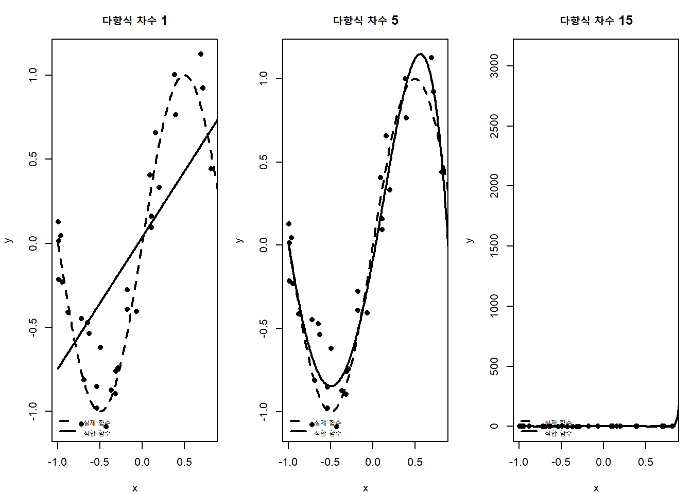
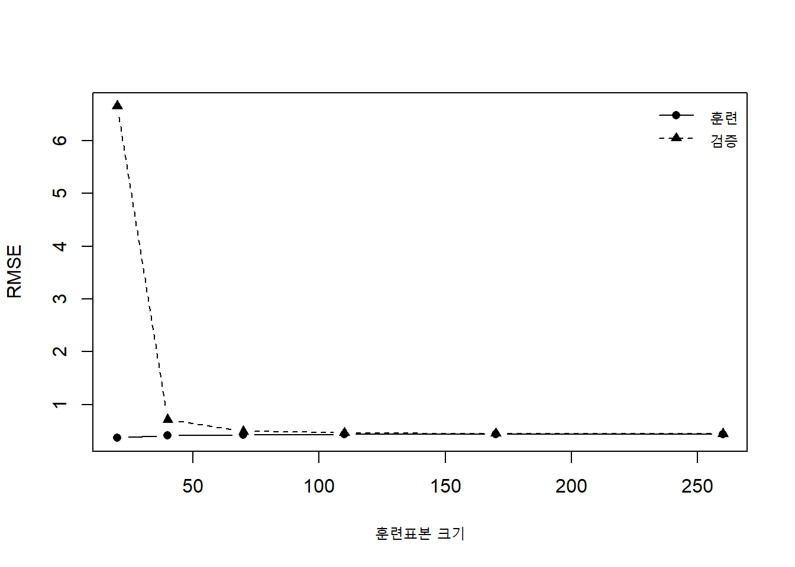
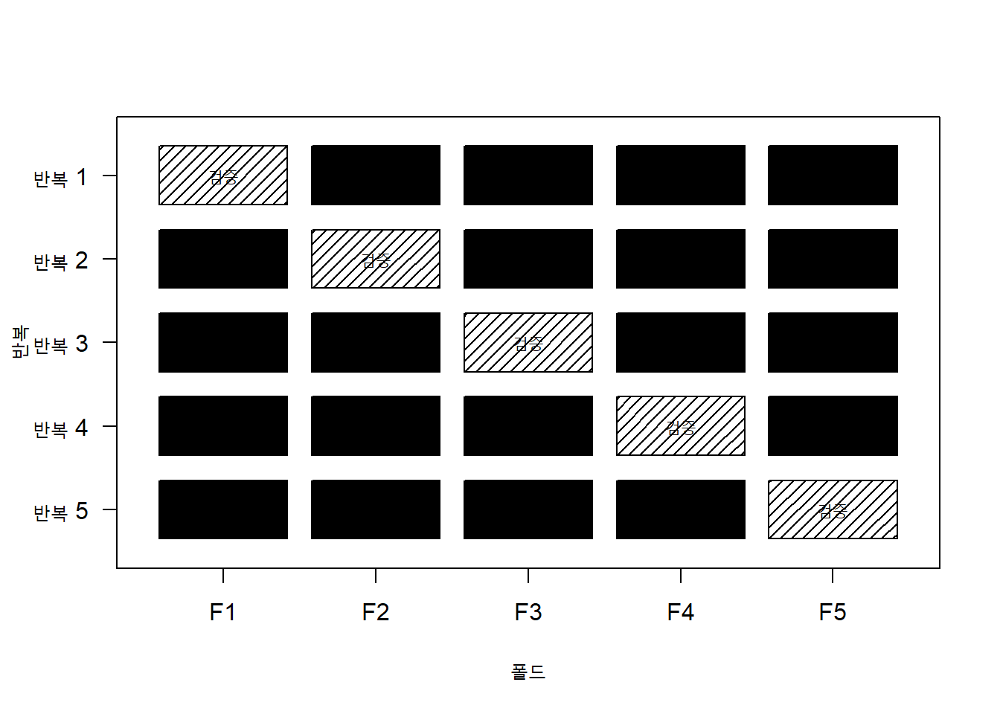
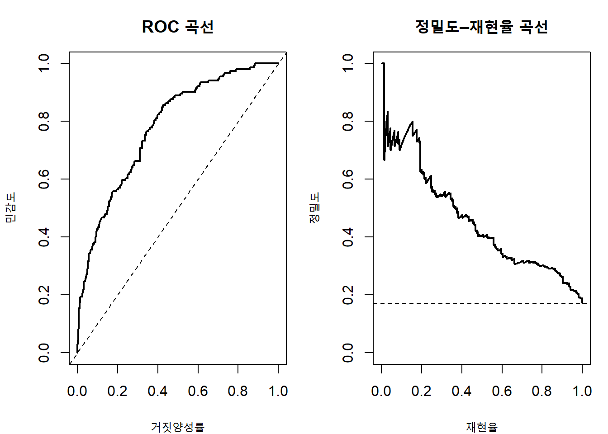
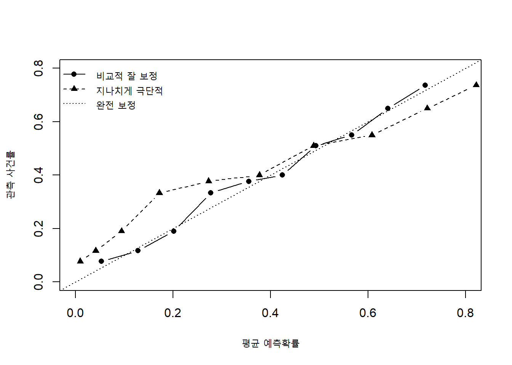
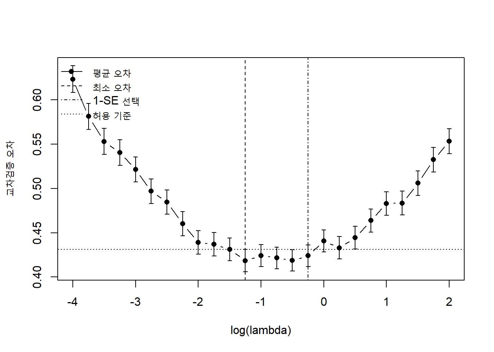
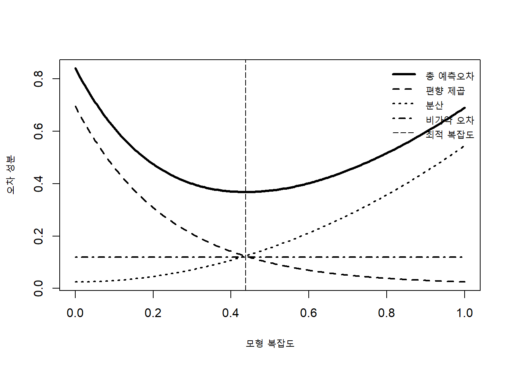

2 모형 평가와 선택
머신러닝에서 모형을 학습하는 목적은 주어진 훈련자료를 완벽하게 설명하는 데 있지 않다. 궁극적인 목적은 학습 과정에서 사용하지 않은 새로운 사례에 대해 정확하고 안정적인 예측을 제공하는 것이다. 따라서 모형의 성능은 훈련자료에서 관측한 적합도만으로 판단할 수 없으며, 실제 적용 환경을 대표하는 독립적인 자료에서 평가해야 한다.
Chapter 1에서는 학습을 경험위험 최소화의 관점에서
\[ \widehat f = \arg\min_{f\in\mathcal H} \widehat R_n(f) \tag{2.1}\]
로 표현하였다. 그러나 방정식 2.1에서 최소화하는 것은 관측된 훈련표본의 평균 손실이다. 우리가 실제로 알고 싶은 양은 새로운 관측값 \((\mathbf X,Y)\)에 대한 기대손실
\[ R(\widehat f) = E_{(\mathbf X,Y)\sim P} \left[ L\{Y,\widehat f(\mathbf X)\} \right] \tag{2.2}\]
이다. 기대위험(expected risk)은 자료생성 분포 \(P\)를 알지 못하기 때문에 직접 계산할 수 없다. 모형 평가는 제한된 자료를 이용하여 방정식 2.2를 가능한 한 편향 없이, 그리고 충분히 정밀하게 추정하는 과정이다.
모형 선택은 평가보다 한 단계 더 복잡하다. 여러 알고리즘, 하이퍼파라미터(hyperparameter), 전처리 방법과 변수 집합을 비교하여 가장 적절한 분석 절차를 선택해야 하기 때문이다. 동일한 자료에서 많은 후보를 반복적으로 비교하면 우연히 좋은 결과를 보인 후보를 선택하게 되고, 그 후보의 성능을 같은 자료로 보고하면 낙관적 편향이 발생한다. 따라서 모형을 선택하는 자료와 선택된 모형을 최종 평가하는 자료를 구분하는 것이 중요하다.
이 장에서는 먼저 경험오차와 일반화오차의 차이를 설명하고, 과소적합(underfitting)과 과적합(overfitting)이 발생하는 구조를 살펴본다. 이어서 홀드아웃, 교차검증, 부트스트랩과 중첩 교차검증(nested cross-validation)을 포함한 평가설계를 정리한다. 회귀, 분류, 확률예측과 의사결정 문제에서 사용하는 성능척도를 자세히 다룬 뒤, 여러 모형을 공정하게 비교하는 방법을 설명한다. 마지막으로 예측오차의 편향–분산 분해를 통해 모형 복잡도, 규제, 앙상블과 평가설계가 서로 어떻게 연결되는지 살펴본다.
중요평가의 기본 원칙
모형 개발 과정에서 사용된 정보는 최종 성능평가에 다시 사용해서는 안 된다. 전처리, 변수 선택, 하이퍼파라미터 탐색, 임계값 선택과 알고리즘 선택을 포함한 모든 데이터 의존적 과정은 평가자료와 분리되어야 한다.
2.1 경험오차와 과적합
2.1.1 훈련오차, 일반화오차와 시험오차
훈련자료를
\[ \mathcal D_{\mathrm{train}} = \{(\mathbf x_i,y_i)\}_{i=1}^{n_{\mathrm{tr}}} \tag{2.3}\]
라고 하자. 이 자료로 학습한 모형을 \(\widehat f_{\mathcal D}\)라고 쓰면 훈련오차(training error)는
\[ \widehat R_{\mathrm{train}}(\widehat f_{\mathcal D}) = \frac{1}{n_{\mathrm{tr}}} \sum_{i=1}^{n_{\mathrm{tr}}} L\{y_i,\widehat f_{\mathcal D}(\mathbf x_i)\} \tag{2.4}\]
로 정의할 수 있다. 훈련오차는 학습 알고리즘이 직접 최소화하거나 간접적으로 사용한 자료에서 계산되므로 일반적으로 기대위험보다 작다. 특히 모형의 자유도가 높을수록 훈련자료의 우연한 변동까지 설명할 수 있어 차이가 커질 수 있다.
독립적인 시험자료
\[ \mathcal D_{\mathrm{test}} = \{(\mathbf x_j^{\ast},y_j^{\ast})\}_{j=1}^{n_{\mathrm{te}}} \tag{2.5}\]
가 동일한 목표분포에서 생성되었다면 시험오차(test error)는
\[ \widehat R_{\mathrm{test}}(\widehat f_{\mathcal D}) = \frac{1}{n_{\mathrm{te}}} \sum_{j=1}^{n_{\mathrm{te}}} L\{y_j^{\ast},\widehat f_{\mathcal D}(\mathbf x_j^{\ast})\} \tag{2.6}\]
이다. 모형이 고정되어 있고 시험자료가 학습과 선택에 사용되지 않았다면 방정식 2.6는 기대위험 방정식 2.2의 자연스러운 추정량이다.
훈련오차와 시험오차의 차이를
\[ \widehat G = \widehat R_{\mathrm{test}}(\widehat f) - \widehat R_{\mathrm{train}}(\widehat f) \tag{2.7}\]
로 나타낼 수 있다. 이를 경험적 일반화 차이라고 부를 수 있다. 다만 시험자료 자체가 유한하므로 \(\widehat G\)에는 표본변동이 존재한다. 또한 시험자료를 반복해서 확인하면서 모형을 수정하면 시험자료도 사실상 개발자료가 되어 더 이상 독립적인 평가 기능을 하지 못한다.
| 오차 | 계산에 사용하는 자료 | 주된 용도 | 주요 한계 |
|---|---|---|---|
| 훈련오차 | 모형 학습에 사용한 자료 | 최적화 상태와 적합도 확인 | 낙관적으로 편향됨 |
| 검증오차 | 후보 선택에 사용하는 자료 | 하이퍼파라미터·모형 선택 | 반복 사용하면 선택편향(selection bias) 발생 |
| 시험오차 | 개발과 선택에서 완전히 분리한 자료 | 최종 일반화 성능 추정 | 표본크기가 작으면 변동이 큼 |
| 외부검증 오차 | 다른 시점·기관·지역에서 수집한 자료 | 이동 가능성과 실제 적용성 평가 | 모집단 차이의 원인 해석 필요 |
2.1.2 낙관도와 재사용 편향
훈련자료를 이용해 모형을 선택했기 때문에 훈련오차는 일반적으로 미래오차보다 낙관적이다. 이 차이를 낙관도(optimism)라고 한다. 개념적으로 낙관도는
\[ \operatorname{Opt} = E\left[ R(\widehat f_{\mathcal D}) - \widehat R_{\mathcal D}(\widehat f_{\mathcal D}) \right] \tag{2.8}\]
로 표현할 수 있다. 기대값은 훈련자료의 반복추출과 새로운 자료의 생성에 대해 취한다. 모형이 복잡하고 표본이 작으며 후보 탐색의 범위가 넓을수록 낙관도가 커지는 경향이 있다.
낙관성은 훈련자료에만 국한되지 않는다. 검증자료를 이용해 100개의 후보 중 가장 높은 AUC를 가진 모형을 선택하면, 선택된 모형의 검증 AUC에는 우연히 유리한 표본변동이 포함되어 있다. 같은 검증 AUC를 최종 성능으로 보고하면 선택 유도 편향이 발생한다. 이를 흔히 승자의 저주 또는 winner’s curse라고 부른다.
후보 모형의 실제 성능이 모두 같다고 하더라도 관측된 검증성능은
\[ \widehat M_m=M+\varepsilon_m, \qquad m=1,\ldots,M_0 \tag{2.9}\]
처럼 잡음을 포함한다. 가장 큰 값을 선택하면
\[ E\left(\max_m\widehat M_m\right)>M \tag{2.10}\]
이므로 후보 수가 많을수록 최고 관측값은 실제 성능을 과대평가할 가능성이 커진다. 이 문제를 해결하려면 선택 과정 전체를 내부 재표본화 안에 포함하고, 선택에 사용하지 않은 외부 자료에서 최종 성능을 평가해야 한다.
2.1.3 과소적합과 과적합
과소적합은 가설 공간이나 학습 절차가 실제 관계를 충분히 표현하지 못하는 상태이다. 훈련오차와 시험오차가 모두 크며, 추가적인 복잡도나 더 유연한 표현이 도움이 될 수 있다.
과적합은 모형이 일반적인 구조뿐 아니라 훈련자료에만 존재하는 우연한 변동까지 학습한 상태이다. 훈련오차는 매우 작지만 시험오차가 증가한다. 과적합은 단순히 모수 수가 많다는 뜻이 아니라, 이용 가능한 정보에 비해 모형의 유효 복잡도가 지나치게 큰 상태를 의미한다.
다음 코드는 같은 자료에 차수가 다른 다항회귀를 적합하여 과소적합, 적절한 적합과 과적합을 비교한다.
그림 2.1에서 1차 다항식은 실제 곡률을 표현하지 못한다. 5차 모형은 전체 구조를 비교적 잘 추정하지만, 15차 모형은 관측값 사이에서 불필요하게 크게 진동한다. 표본이 바뀌면 15차 모형의 곡선도 크게 달라질 가능성이 높다.
노트과적합은 모형의 속성만이 아니다
동일한 모형도 표본크기, 잡음 수준, 변수 수, 규제 강도와 탐색 범위에 따라 과적합될 수도 있고 그렇지 않을 수도 있다. 따라서 “신경망은 과적합되고 선형모형은 과적합되지 않는다”와 같은 절대적인 표현은 적절하지 않다.
2.1.4 모형 복잡도와 유효 자유도
모형 복잡도를 단순히 모수의 개수로 측정할 수 있는 경우도 있지만, 많은 알고리즘에서는 유효 자유도라는 관점이 더 적절하다. 선형 평활기에서 적합값이
\[ \widehat{\mathbf y} = \mathbf S\mathbf y \tag{2.11}\]
로 표현된다면 유효 자유도를
\[ \operatorname{df}_{\mathrm{eff}} = \operatorname{tr}(\mathbf S) \tag{2.12}\]
로 정의할 수 있다. 릿지 회귀에서는 규제계수 \(\lambda\)가 증가할수록 \(\operatorname{df}_{\mathrm{eff}}\)가 감소한다. 의사결정 트리에서는 깊이와 말단노드 수가 복잡도에 영향을 주고, k-최근접 이웃에서는 작은 \(k\)가 더 유연한 결정경계를 만든다. 신경망에서는 가중치 수뿐 아니라 구조, 규제, 최적화와 조기 종료가 유효 복잡도에 영향을 준다.
모형 복잡도가 증가할 때 훈련오차는 일반적으로 감소하거나 유지된다. 가설 공간이 \(\mathcal H_1\subseteq\mathcal H_2\)를 만족하면
\[ \min_{f\in\mathcal H_2}\widehat R_n(f) \le \min_{f\in\mathcal H_1}\widehat R_n(f) \tag{2.13}\]
이기 때문이다. 그러나 기대위험은 단조롭게 감소하지 않는다. 표현력 증가로 근사오차는 줄어들 수 있지만 추정불확실성이 커질 수 있다.
2.1.5 보간과 현대적 과매개화
고전적인 설명에서는 훈련오차가 0에 가까워지는 지점 이후 시험오차가 증가한다고 본다. 그러나 일부 과매개화 모형에서는 모수 수가 표본 수를 넘고 훈련자료를 완전히 보간한 뒤에도 시험오차가 다시 감소하는 이중하강 현상이 관측될 수 있다.
이 현상은 “과적합이 더 이상 문제가 아니다”라는 뜻이 아니다. 과매개화 모형의 성능은 최적화 알고리즘이 어떤 보간해를 선택하는지, 데이터의 잡음과 구조, 규제와 초기화에 크게 의존한다. 명시적 규제가 없더라도 경사하강법과 모형 구조가 특정한 낮은 복잡도의 해를 선호하는 암묵적 규제로 작용할 수 있다.
고전적 U자형 곡선과 이중하강 곡선은 서로 배타적인 설명이 아니라, 복잡도를 어떤 축으로 측정하고 어떤 학습체제를 관찰하는지에 따라 나타나는 서로 다른 현상이다. 실제 모형 선택에서는 여전히 독립적인 평가와 적절한 재표본화가 필요하다.
2.1.6 학습곡선
학습곡선(learning curve)은 훈련표본 크기에 따라 훈련성능과 검증성능이 어떻게 변하는지를 나타낸다. 표본크기를 \(m\)이라 할 때 반복적인 부분표본으로 모형을 적합하고
\[ \widehat R_{\mathrm{train}}(m), \qquad \widehat R_{\mathrm{valid}}(m) \tag{2.14}\]
을 계산한다.
학습곡선은 다음과 같이 해석할 수 있다.
- 훈련오차와 검증오차가 모두 크고 서로 가까우면 모형이 과소적합되었을 가능성이 있다.
- 훈련오차는 작고 검증오차가 크며 차이가 유지되면 과적합 또는 높은 분산이 의심된다.
- 표본이 증가할수록 검증오차가 계속 감소하면 더 많은 데이터가 도움이 될 수 있다.
- 두 곡선이 일찍 수렴하고 성능이 충분하지 않다면 데이터 추가보다 표현, 변수 또는 알고리즘을 변경할 필요가 있다.

그림 2.2에서는 작은 표본에서 훈련오차와 검증오차(validation error)의 차이가 크지만 표본이 증가하면서 간격이 줄어든다. 이러한 그림은 단일한 성능값보다 모형의 실패 원인을 더 잘 보여준다.
2.1.7 데이터 누출과 잘못된 평가
데이터 누출(data leakage)은 예측 시점에 이용할 수 없거나 평가자료에만 존재하는 정보가 학습과정에 들어가는 현상이다. 누출이 발생하면 평가성능은 실제 적용성능보다 크게 높아질 수 있다.
대표적인 누출은 다음과 같다.
- 전체 자료에서 평균과 표준편차를 계산한 뒤 훈련·시험자료를 분할한다.
- 전체 자료에서 변수 선택을 수행한 뒤 교차검증한다.
- 시험자료의 성능을 보면서 하이퍼파라미터를 조정한다.
- 결과 발생 이후에 측정된 변수를 예측변수로 사용한다.
- 동일한 사람의 반복관측이 훈련과 시험 폴드에 동시에 들어간다.
- 시간순서를 무시하고 미래정보가 과거 예측에 포함된다.
- 이미지의 중복본이나 같은 원자료에서 파생된 패치가 서로 다른 분할에 포함된다.
전처리 변환을 \(T_{\widehat\theta}\)라고 하자. 올바른 절차는 각 훈련분할에서
\[ \widehat\theta = A(\mathcal D_{\mathrm{train}}) \tag{2.15}\]
를 추정하고, 동일한 변환을 검증자료에 적용하는 것이다.
\[ \widetilde{\mathcal D}_{\mathrm{train}} = T_{\widehat\theta}(\mathcal D_{\mathrm{train}}), \qquad \widetilde{\mathcal D}_{\mathrm{valid}} = T_{\widehat\theta}(\mathcal D_{\mathrm{valid}}) \tag{2.16}\]
전체 자료에서 \(\widehat\theta\)를 추정하면 검증자료의 분포 정보가 훈련과정에 유입된다. 표준화처럼 영향이 작아 보이는 처리도 고차원·소표본 상황에서는 성능을 낙관적으로 만들 수 있다.
경고전처리도 모형의 일부이다
결측값 대치, 표준화, 범주 통합, 이상치 처리, 파생변수 생성, 차원 축소와 변수 선택은 모두 데이터에서 학습되는 절차이다. 교차검증을 수행할 때 이러한 단계는 각 훈련 폴드 안에서 다시 적합해야 한다.
2.1.8 목표 모집단과 평가분포
좋은 평가설계는 단순히 자료를 무작위로 나누는 것이 아니라 실제 적용환경을 반영해야 한다. 학습분포를 \(P_{\mathrm{train}}\)이고 적용분포를 \(P_{\mathrm{target}}\)이라고 하면 우리가 평가하려는 위험은
\[ R_{\mathrm{target}}(f) = E_{(\mathbf X,Y)\sim P_{\mathrm{target}}} \left[ L\{Y,f(\mathbf X)\} \right] \tag{2.17}\]
이다. 무작위 분할은 대체로 같은 자료원의 평균적인 성능을 평가한다. 그러나 미래시점, 다른 병원, 다른 장비 또는 다른 국가에 적용하려면 시간·기관·지역을 분리한 평가가 더 적절할 수 있다.
평가자료가 목표 모집단을 대표하지 못하면 계산 자체가 정확하더라도 질문에 답하지 못한다. 따라서 평가를 시작하기 전에 다음을 명확히 해야 한다.
- 누구에게 적용할 모형인가?
- 어느 시점의 정보를 이용해 무엇을 예측하는가?
- 실제 배포환경에서 입력변수는 동일하게 측정되는가?
- 어떤 분포 이동이 예상되는가?
- 성능 저하가 특히 중요한 하위집단은 무엇인가?
2.2 평가 방법
2.2.1 평가설계의 기본 구조
모형 개발은 크게 세 단계로 나눌 수 있다.
- 학습: 모수와 내부 상태를 추정한다.
- 선택: 알고리즘, 변수, 전처리와 하이퍼파라미터를 결정한다.
- 평가: 선택된 전체 절차의 새로운 자료 성능을 추정한다.
훈련자료와 평가자료의 역할을 수식으로 구분해 보자. 후보 절차를 \(\mathcal A_\lambda\)라고 하고, \(\lambda\)는 하이퍼파라미터라고 하자. 훈련자료에서
\[ \widehat f_{\lambda} = \mathcal A_{\lambda}(\mathcal D_{\mathrm{train}}) \tag{2.18}\]
를 얻는다. 검증자료로
\[ \widehat\lambda = \arg\min_{\lambda\in\Lambda} \widehat R_{\mathrm{valid}}(\widehat f_{\lambda}) \tag{2.19}\]
를 선택한 뒤, 선택된 설정으로 개발자료 전체에서 다시 적합한다.
\[ \widehat f_{\mathrm{final}} = \mathcal A_{\widehat\lambda} (\mathcal D_{\mathrm{train}}\cup\mathcal D_{\mathrm{valid}}) \tag{2.20}\]
마지막으로 시험자료에서 \(\widehat f_{\mathrm{final}}\)의 성능을 한 번 평가한다. 시험자료는 방정식 2.19에 영향을 주어서는 안 된다.
2.2.2 단순 홀드아웃
홀드아웃(holdout)은 전체 자료를 서로 겹치지 않는 훈련자료와 시험자료로 나누는 가장 단순한 방법이다. 필요에 따라 훈련자료를 다시 훈련부분과 검증부분으로 나눈다.
\[ \mathcal D = \mathcal D_{\mathrm{train}} \mathbin{\dot\cup} \mathcal D_{\mathrm{valid}} \mathbin{\dot\cup} \mathcal D_{\mathrm{test}} \tag{2.21}\]
홀드아웃의 장점은 구현이 간단하고 계산비용이 작으며, 시험자료가 충분히 크다면 해석이 명확하다는 점이다. 반면 표본이 작을 때는 어떤 관측값이 어느 집합에 들어갔는지에 따라 결과가 크게 달라질 수 있다. 또한 시험자료로 분리한 만큼 최종 모형 학습에 사용할 수 있는 자료가 줄어든다.
분할 비율에 절대적인 규칙은 없다. 70:30, 80:20 또는 60:20:20 같은 비율보다 중요한 것은 다음 조건이다.
- 시험자료가 관심 성능을 충분한 정밀도로 추정할 만큼 커야 한다.
- 희귀 사건과 주요 하위집단이 각 분할에 적절히 포함되어야 한다.
- 실제 적용구조를 반영하도록 개체·시간·기관 단위의 독립성을 유지해야 한다.
- 최종 시험자료는 모형 개발 과정에서 잠가 두어야 한다.
2.2.3 층화 분할
이진 결과가 매우 불균형한 경우 단순 무작위 분할은 일부 분할에 사건이 거의 없게 만들 수 있다. 층화 분할은 클래스별 비율을 유지하면서 관측값을 나눈다. 클래스 \(k\)의 관측값 집합을 \(I_k\)라 하면 각 클래스 안에서 독립적으로 훈련·검증·시험 인덱스를 추출한다.
층화는 평가의 분산을 줄이고 각 폴드에서 성능척도를 계산할 수 있도록 돕는다. 그러나 무조건 결과변수만 기준으로 층화해서는 안 된다. 자료가 병원, 환자, 가족, 학교처럼 군집구조를 가지면 먼저 독립 단위를 유지해야 한다. 예를 들어 한 환자의 반복영상은 같은 폴드에 들어가야 한다.
2.2.4 반복 홀드아웃
반복 홀드아웃은 서로 다른 무작위 분할을 \(B\)회 생성하고 각 분할에서 성능을 계산한다.
\[ \widehat M_b, \qquad b=1,\ldots,B \tag{2.22}\]
평균 성능은
\[ \overline M = \frac{1}{B}\sum_{b=1}^{B}\widehat M_b \tag{2.23}\]
로 계산한다. 여러 분할에서의 변동을 관찰할 수 있다는 장점이 있지만, 동일한 관측값이 여러 번 평가에 사용되므로 \(\widehat M_b\)들은 독립이 아니다. 따라서 단순 표준오차 \(s/\sqrt B\)를 그대로 사용하는 것은 적절하지 않을 수 있다.
2.2.5 k-겹 교차검증
k-겹 교차검증은 자료를 크기가 비슷한 \(K\)개의 서로 겹치지 않는 폴드
\[ I_1,\ldots,I_K, \qquad \bigcup_{k=1}^{K}I_k=\{1,\ldots,n\} \tag{2.24}\]
로 나눈다. \(k\)번째 반복에서는 \(I_k\)를 검증자료로 두고 나머지 폴드로 모형을 학습한다. 관측값 \(i\in I_k\)에 대한 교차검증 예측을 \(\widehat f^{(-k)}(\mathbf x_i)\)라고 하면 교차검증 위험은
\[ \widehat R_{\mathrm{CV}} = \frac{1}{n} \sum_{k=1}^{K} \sum_{i\in I_k} L\{y_i,\widehat f^{(-k)}(\mathbf x_i)\} \tag{2.25}\]
로 계산할 수 있다.

그림 2.3와 같이 모든 관측값은 정확히 한 번 검증자료가 되고 \(K-1\)번 훈련자료에 포함된다. 일반적으로 \(K=5\) 또는 \(K=10\)을 많이 사용한다. \(K\)가 클수록 각 모형은 더 많은 자료로 학습되지만 계산비용이 증가하고 폴드 간 추정치의 상관구조가 복잡해진다.
폴드별 성능의 단순 평균
\[ \frac{1}{K}\sum_{k=1}^{K}\widehat M_k \tag{2.26}\]
과 모든 out-of-fold 예측(out-of-fold prediction)을 합쳐 한 번 계산한 성능은 비선형 척도에서 서로 다를 수 있다. AUC, F1 점수와 같은 척도는 가능하면 모든 교차검증 예측을 모은 뒤 전체적으로 계산하는 방법과 폴드별 분포를 함께 보고하는 것이 좋다.
2.2.6 반복 k-겹 교차검증
한 번의 폴드 구성에 따른 변동을 줄이기 위해 k-겹 교차검증을 서로 다른 무작위 분할로 \(R\)회 반복할 수 있다. 총 \(RK\)개의 적합이 필요하며 하이퍼파라미터가 여러 개라면 계산량은 더 커진다.
반복 교차검증은 평균 성능뿐 아니라 분할 민감도를 파악하는 데 유용하다. 그러나 반복에서 얻은 값은 같은 원자료를 공유하므로 독립적인 반복실험으로 해석해서는 안 된다. 신뢰구간을 구성할 때는 관측단위 또는 전체 재표본화 과정을 고려해야 한다.
2.2.7 일대일 교차검증
일대일 교차검증은 \(K=n\)인 특별한 경우이다. 각 반복에서 관측값 하나를 제외하고 나머지 \(n-1\)개로 학습한다.
\[ \widehat R_{\mathrm{LOO}} = \frac{1}{n} \sum_{i=1}^{n} L\{y_i,\widehat f^{(-i)}(\mathbf x_i)\} \tag{2.27}\]
거의 전체 자료로 학습하므로 작은 훈련표본으로 인한 편향은 작을 수 있다. 하지만 각 훈련자료가 매우 비슷해 검증손실 간 상관이 크고, 불안정한 알고리즘에서는 분산이 커질 수 있다. 계산비용도 크지만 선형모형처럼 빠른 갱신식이나 닫힌형태가 있는 경우 효율적으로 계산할 수 있다.
2.2.8 부트스트랩 평가
비모수적 부트스트랩(bootstrap)은 원자료에서 복원추출하여 크기 \(n\)의 부트스트랩 표본을 만든다. 한 부트스트랩 표본에 포함되는 서로 다른 관측값의 기대 비율은
\[ 1-\left(1-\frac{1}{n}\right)^n \longrightarrow 1-e^{-1} \approx0.632 \tag{2.28}\]
이다. 따라서 약 36.8%의 관측값은 해당 부트스트랩 표본에 포함되지 않으며, 이를 out-of-bag 관측값이라고 한다.
부트스트랩 반복 \(b\)에서 부트스트랩 표본으로 모형을 적합하고 out-of-bag 자료에서 손실을 계산하면
\[ \widehat R_{\mathrm{OOB}} = \frac{1}{B} \sum_{b=1}^{B} \widehat R_{\mathrm{OOB},b} \tag{2.29}\]
를 얻는다. 단순 out-of-bag 추정치는 각 모형이 평균적으로 약 63.2%의 서로 다른 관측값만 사용하므로 전체 표본으로 학습한 모형보다 비관적일 수 있다.
.632 추정량은 재대입 오차와 out-of-bag 오차를 결합한다.
\[ \widehat R_{.632} = 0.368\widehat R_{\mathrm{resub}} + 0.632\widehat R_{\mathrm{OOB}} \tag{2.30}\]
과적합이 심한 경우에는 .632 추정량도 낙관적일 수 있어 과적합 정도를 반영하는 .632+ 방법이 제안되었다. 실제 사용에서는 교차검증과 부트스트랩의 목적을 구분하는 것이 중요하다. 교차검증은 모형 선택과 일반화 성능 추정에 널리 사용되고, 부트스트랩은 성능척도의 표본분포와 불확실성, 내부검증과 낙관도 보정에 특히 유용하다.
2.2.9 중첩 교차검증
하이퍼파라미터 탐색이나 변수 선택이 포함된 전체 학습절차의 성능을 추정하려면 중첩 교차검증을 사용할 수 있다. 바깥쪽 교차검증은 최종 평가를 담당하고, 안쪽 교차검증은 모형 선택을 담당한다.
바깥 폴드 \(k\)의 훈련부분을 \(\mathcal D_{-k}\), 시험부분을 \(\mathcal D_k\)라고 하자. 안쪽 교차검증을 이용해
\[ \widehat\lambda_k = \arg\min_{\lambda\in\Lambda} \widehat R_{\mathrm{inner},k}(\lambda) \tag{2.31}\]
를 선택하고, \(\mathcal D_{-k}\) 전체에서 다시 적합한 뒤 \(\mathcal D_k\)에서 평가한다.
\[ \widehat R_{\mathrm{nested}} = \frac{1}{n} \sum_{k=1}^{K_{\mathrm{outer}}} \sum_{i\in I_k} L\!\left\{ y_i, \widehat f_{\widehat\lambda_k}^{(-k)}(\mathbf x_i) \right\}. \tag{2.32}\]
중첩 교차검증의 평가대상은 특정한 하나의 하이퍼파라미터가 아니라 안쪽 교차검증으로 하이퍼파라미터를 선택하고 다시 적합하는 전체 알고리즘이다. 바깥 폴드마다 선택되는 \(\widehat\lambda_k\)가 달라도 문제가 아니다. 이는 데이터가 달라질 때 선택절차가 어떻게 반응하는지를 반영한다.
중요중첩 교차검증이 필요한 경우
여러 하이퍼파라미터, 변수 집합 또는 알고리즘을 비교한 결과의 일반화 성능을 같은 교차검증값으로 보고해서는 안 된다. 후보 선택이 이루어졌다면 별도의 바깥 평가가 필요하다. 독립적인 대규모 시험자료가 없을 때 중첩 교차검증은 가장 체계적인 대안이다.
2.2.10 군집·개체 단위 교차검증
자료에 반복측정, 가족, 학교, 병원 또는 동일 문서·영상에서 파생된 여러 관측값이 포함되면 관측값 수준의 무작위 분할은 독립성을 깨뜨린다. 같은 군집의 관측값들이 서로 유사하기 때문에 훈련자료에 포함된 군집의 정보를 이용하여 검증자료를 쉽게 예측할 수 있다.
군집변수를 \(G_i\)라고 하면 모든 동일 군집의 관측값이 같은 폴드에 배정되어야 한다.
\[ G_i=G_j \quad\Longrightarrow\quad \operatorname{fold}(i)=\operatorname{fold}(j) \tag{2.33}\]
새로운 환자의 관측값을 예측하려는지, 기존 환자의 미래 관측값을 예측하려는지에 따라 분할 단위가 달라질 수 있다. 전자는 환자 단위 분할이 필요하고, 후자는 시간순서를 보존한 환자 내 평가가 필요할 수 있다.
2.2.11 시간 순서 평가
시계열 또는 시간에 따라 수집되는 자료에서는 미래자료로 과거를 예측하지 않도록 해야 한다. 가장 단순한 방법은 특정 시점을 기준으로 과거를 훈련자료, 미래를 시험자료로 나누는 것이다.
확장창 평가에서는 시간 \(t\)까지의 자료로 학습하고 이후 구간에서 평가한다.
\[ \mathcal D_{\mathrm{train}}^{(t)} = \{(\mathbf x_i,y_i): T_i\le t\}, \qquad \mathcal D_{\mathrm{test}}^{(t)} = \{(\mathbf x_i,y_i): t<T_i\le t+h\} \tag{2.34}\]
여러 기준시점에서 이를 반복하면 시간에 따른 성능 안정성과 분포 이동을 확인할 수 있다. 시간 평가에서는 결과가 관측될 때까지의 지연, 변수 가용시점, 정책과 측정방식의 변화도 함께 고려해야 한다.
2.2.12 공간·기관 외부검증
기관이나 지역에 따라 환자 구성, 장비, 측정방식과 임상과정이 다를 수 있다. 새로운 기관으로의 이동 가능성이 중요하다면 기관 단위 leave-one-site-out 평가를 수행할 수 있다. 기관 수를 \(S\)라고 하면 기관 \(s\)를 제외하고 학습한 모형을 해당 기관에서 평가한다.
\[ \widehat R_{\mathrm{LOSO}} = \sum_{s=1}^{S} \frac{n_s}{n} \widehat R_s(\widehat f^{(-s)}) \tag{2.35}\]
기관별 성능을 단순히 평균내는 것만으로는 충분하지 않다. 평균 성능이 좋아도 특정 기관에서 심각하게 실패할 수 있으므로 기관별 분포와 이질성을 함께 보고해야 한다.
2.2.13 몬테카를로 교차검증과 특수 분할
문제 구조에 따라 다양한 재표본화 방법을 사용할 수 있다.
- 몬테카를로 교차검증: 임의의 훈련·검증 분할을 여러 번 반복한다.
- 블록 교차검증: 시간 또는 공간적으로 가까운 관측값을 블록으로 묶는다.
- 갭 교차검증: 훈련기간과 검증기간 사이에 간격을 두어 근접 누출을 줄인다.
- 사건 수 기준 층화: 희귀 사건이 각 폴드에 충분히 포함되도록 한다.
- 계층적 분할: 기관을 먼저 분리하고 기관 안에서 환자 단위로 분할한다.
- 전진 연결 평가: 시간에 따라 학습창을 확장하며 미래 구간을 순차적으로 평가한다.
평가방법은 소프트웨어의 기본값이 아니라 예측과제의 독립단위와 적용환경에 따라 선택해야 한다.
2.2.14 재표본화 방법의 비교
| 방법 | 훈련자료 비율 | 장점 | 주의점 | 적합한 상황 |
|---|---|---|---|---|
| 단순 홀드아웃 | 설정에 따라 다름 | 단순하고 계산이 빠름 | 분할에 민감 | 대규모 자료, 고정 시험셋 |
| 반복 홀드아웃 | 설정에 따라 다름 | 분할 변동 확인 | 반복값이 독립이 아님 | 중간 규모 자료 |
| k-겹 교차검증 | \((K-1)/K\) | 효율성과 계산량의 균형 | 폴드 설계가 중요 | 일반적인 모형 선택 |
| 일대일 교차검증 | \((n-1)/n\) | 거의 전체 자료로 학습 | 높은 계산량과 변동 가능성 | 매우 작은 자료, 안정적 모형 |
| 부트스트랩 | 중복 포함 \(n\)개 | 불확실성과 낙관도 추정 | 학습표본 구조가 원자료와 다름 | 내부검증, 신뢰구간 |
| 중첩 교차검증 | 이중 재표본화 | 선택편향을 통제 | 계산량이 큼 | 하이퍼파라미터·알고리즘 비교 |
| 군집 교차검증 | 군집 기준 | 개체 간 누출 방지 | 폴드 수와 균형 제한 | 반복측정·다기관 자료 |
| 시간 분할 | 과거 자료 | 실제 미래예측을 모사 | 시간 이동에 민감 | 시계열·동적 환경 |
2.2.15 성능 추정의 불확실성
성능값은 하나의 숫자가 아니라 표본에 의존하는 추정량이다. 시험자료가 고정되어 있을 때 평균손실
\[ \widehat R = \frac{1}{n_{\mathrm{te}}} \sum_{i=1}^{n_{\mathrm{te}}}\ell_i \tag{2.36}\]
의 표준오차는 독립성과 동일분포 가정 아래
\[ \widehat{\operatorname{SE}}(\widehat R) = \frac{s_{\ell}}{\sqrt{n_{\mathrm{te}}}} \tag{2.37}\]
로 추정할 수 있다. 하지만 AUC, F1 점수, 교차검증 성능처럼 관측값 간 의존성이 있거나 비선형인 척도에는 별도의 방법이 필요하다.
부트스트랩 신뢰구간은 시험자료에서 관측단위를 재표본화하여 성능척도를 반복 계산하는 일반적인 방법이다. 군집자료라면 관측값이 아니라 군집을 재표본화해야 한다. 교차검증의 불확실성을 평가할 때는 고정된 out-of-fold 예측만 재표본화하는 방법과 모형 학습 전체를 다시 수행하는 방법이 서로 다른 변동원을 반영한다.
평가보고에서는 점추정치와 함께 다음을 제시하는 것이 좋다.
- 신뢰구간 또는 경험적 분포
- 사건 수와 비사건 수
- 하위집단별 표본크기
- 분할 또는 시드에 따른 변동
- 외부기관·시간별 성능범위
2.3 모형 성능 측정
2.3.1 성능척도 선택의 원칙
성능척도는 단순한 보고 형식이 아니라 학습과 선택의 목표를 수치화한다. 같은 예측값도 어떤 손실함수를 사용하는지에 따라 서로 다른 평가를 받을 수 있다. 따라서 척도는 다음 요소를 반영해 선택해야 한다.
- 결과변수의 형태가 연속형, 범주형, 순서형 또는 시간-사건 자료인지
- 점예측, 순위, 확률 또는 의사결정 중 무엇이 중요한지
- 거짓양성과 거짓음성의 비용이 같은지
- 클래스 비율이 실제 적용환경과 같은지
- 예측확률의 보정이 필요한지
- 개인 수준의 정확도와 집단 수준의 평균 오차 중 무엇이 중요한지
- 성능이 특정 임계값에서 필요한지 전체 임계값 범위에서 필요한지
하나의 척도가 모든 성능 특성을 요약할 수는 없다. 예를 들어 AUC가 높아도 예측확률이 체계적으로 과대평가될 수 있고, 정확도가 높아도 희귀 사건을 전혀 찾지 못할 수 있다. 따라서 주요 목적에 맞는 1차 척도를 사전에 정하고, 이를 보완하는 척도를 함께 보고하는 것이 바람직하다.
노트성능척도와 손실함수
모형을 어떤 손실함수로 학습했는지와 어떤 척도로 평가하는지는 구분해야 한다. 로그손실(log loss)로 학습한 확률모형을 AUC, Brier 점수(Brier score), 보정도와 임상적 순편익(net benefit)으로 평가할 수 있다. 다만 학습목표와 실제 의사결정목표가 지나치게 다르면 선택된 모형이 사용 목적에 최적이지 않을 수 있다.
2.3.2 회귀 성능척도
연속형 결과 \(y_i\)와 예측값 \(\widehat y_i\)의 잔차를
\[ e_i=y_i-\widehat y_i \tag{2.38}\]
라고 하자. 회귀 성능척도는 잔차의 크기를 어떤 방식으로 요약하는지에 따라 달라진다.
평균절대오차
평균절대오차는
\[ \operatorname{MAE} = \frac{1}{n}\sum_{i=1}^{n}|y_i-\widehat y_i| \tag{2.39}\]
로 정의한다. 결과변수와 같은 단위를 가지며 개별 오차의 절댓값을 선형적으로 반영한다. 큰 오차에 대한 민감도가 제곱오차보다 낮아 이상치에 비교적 강건하다.
절대오차 손실의 조건부 기대값을 최소화하는 점예측은 조건부 중앙값이다. 따라서 MAE는 중앙값 예측을 목표로 하는 문제와 자연스럽게 연결된다.
평균제곱오차와 평균제곱근오차
평균제곱오차는
\[ \operatorname{MSE} = \frac{1}{n}\sum_{i=1}^{n}(y_i-\widehat y_i)^2 \tag{2.40}\]
이고, 평균제곱근오차는
\[ \operatorname{RMSE} = \sqrt{ \frac{1}{n}\sum_{i=1}^{n}(y_i-\widehat y_i)^2 } \tag{2.41}\]
이다. RMSE는 결과변수와 같은 단위를 가지며 큰 오차에 더 큰 가중치를 준다. 제곱오차의 기대값을 최소화하는 점예측은 조건부 평균이므로 평균 예측이 중요한 문제에 적합하다.
RMSE가 MAE보다 훨씬 크다면 일부 관측값에서 매우 큰 오차가 존재할 가능성이 있다. 따라서 두 척도를 함께 제시하면 오차분포의 꼬리에 관한 정보를 얻을 수 있다.
중앙절대오차
중앙절대오차는
\[ \operatorname{MedAE} = \operatorname{median}_{i} |y_i-\widehat y_i| \tag{2.42}\]
로 정의한다. 극단적인 오차에 거의 영향을 받지 않지만 전체 손실을 충분히 반영하지 못할 수 있다. 오차분포가 심하게 비대칭이거나 이상치가 많은 경우 보조 척도로 유용하다.
결정계수
시험자료에서 결정계수는
\[ R^2 = 1- \frac{ \sum_{i=1}^{n}(y_i-\widehat y_i)^2 }{ \sum_{i=1}^{n}(y_i-\overline y)^2 } \tag{2.43}\]
로 계산한다. 분모는 시험자료의 평균만을 예측하는 기준모형(baseline model)의 제곱오차이다. 따라서 \(R^2\)는 기준모형에 비해 제곱오차를 얼마나 줄였는지를 나타낸다.
시험자료에서 \(R^2\)는 음수가 될 수 있다. 이는 선택된 모형의 예측이 시험자료 평균을 항상 예측하는 단순 기준보다 나쁘다는 뜻이다. 훈련자료에서 절편을 포함한 최소제곱회귀의 \(R^2\)가 0 이상이라는 성질을 시험자료의 \(R^2\)에 그대로 적용해서는 안 된다.
평균절대백분율오차
평균절대백분율오차는
\[ \operatorname{MAPE} = \frac{100}{n} \sum_{i=1}^{n} \left| \frac{y_i-\widehat y_i}{y_i} \right| \tag{2.44}\]
이다. 백분율로 해석하기 쉽지만 \(y_i=0\)에서 정의되지 않고, 0에 가까운 값에 지나치게 큰 가중치를 준다. 또한 같은 절대오차라도 과대예측과 과소예측을 비대칭적으로 다룰 수 있다. 0이나 음수가 가능한 결과에서는 신중하게 사용해야 한다.
대안으로 대칭 평균절대백분율오차를
\[ \operatorname{sMAPE} = \frac{100}{n} \sum_{i=1}^{n} \frac{2|y_i-\widehat y_i|} {|y_i|+|\widehat y_i|} \tag{2.45}\]
로 정의할 수 있지만, 이 역시 분모가 매우 작을 때 불안정하고 완전한 대칭성을 보장하지 않는다.
평균로그제곱오차
양의 결과에서 상대적인 오차를 강조하려면
\[ \operatorname{MSLE} = \frac{1}{n} \sum_{i=1}^{n} \left[ \log(1+y_i)-\log(1+\widehat y_i) \right]^2 \tag{2.46}\]
를 사용할 수 있다. 큰 절대값보다 비율 차이를 중요하게 다루지만, 음수 예측이나 음수 결과에는 적용할 수 없다. 로그변환된 척도에서의 오차가 실제 의사결정 의미와 일치하는지 확인해야 한다.
분위수 손실
조건부 분위수를 예측할 때는 핀볼 손실을 사용한다. 분위수 수준 \(\tau\in(0,1)\)에서
\[ L_{\tau}(y,q) = \begin{cases} \tau(y-q), & y\ge q,\\ (1-\tau)(q-y), & y<q \end{cases} \tag{2.47}\]
로 정의한다. 기대 핀볼 손실을 최소화하는 \(q\)는 조건부 \(\tau\) 분위수이다. 과소예측과 과대예측의 비용이 다른 수요예측, 재고관리와 위험관리에서 유용하다.
기준모형과 척도화 오차
서로 다른 단위나 데이터셋의 성능을 비교하려면 기준모형의 오차로 나눈 척도를 사용할 수 있다. 예를 들어 평균절대척도오차는
\[ \operatorname{MASE} = \frac{ \frac{1}{n}\sum_{i=1}^{n}|y_i-\widehat y_i| }{ \frac{1}{n-1}\sum_{i=2}^{n}|y_i-y_{i-1}| } \tag{2.48}\]
처럼 단순한 시계열 예측의 평균절대오차를 기준으로 한다. MASE가 1보다 작으면 기준예측보다 평균절대오차가 작다.
| 척도 | 최적 점예측과의 연결 | 큰 오차 민감도 | 단위 | 주요 주의점 |
|---|---|---|---|---|
| MAE | 조건부 중앙값 | 중간 | 결과와 동일 | 미분 불가능 지점 존재 |
| MSE | 조건부 평균 | 큼 | 제곱 단위 | 이상치에 민감 |
| RMSE | 조건부 평균 | 큼 | 결과와 동일 | 표본 간 비교 시 범위 영향 |
| MedAE | 조건부 중앙값 근처 | 작음 | 결과와 동일 | 전체 손실을 덜 반영 |
| \(R^2\) | 평균 기준 상대성능 | 제곱오차 기반 | 무단위 | 시험자료에서 음수 가능 |
| MAPE | 상대오차 | 0 근처에서 매우 큼 | 백분율 | 0과 음수에 부적합 |
| 핀볼 손실 | 조건부 분위수 | 비대칭 설정 가능 | 결과와 동일 | \(\tau\)의 목적 해석 필요 |
2.3.3 잔차 진단과 오차분포
단일 평균척도만으로는 모형의 실패구조를 파악하기 어렵다. 잔차를 예측값, 주요 특성, 시간과 하위집단에 따라 시각화해야 한다.
좋은 평균 성능을 보이는 모형도 다음 문제를 가질 수 있다.
- 결과가 큰 구간에서 체계적으로 과소예측한다.
- 특정 기관이나 성별에서 오차가 크다.
- 시간에 따라 잔차 평균이 변화한다.
- 예측구간의 실제 포함률이 목표 수준보다 낮다.
- 오차분산이 예측값에 따라 증가한다.
회귀에서 평균 잔차
\[ \overline e = \frac{1}{n}\sum_{i=1}^{n}(y_i-\widehat y_i) \tag{2.49}\]
는 전체적인 과대·과소예측을 보여준다. \(\overline e>0\)이면 평균적으로 실제값이 예측값보다 커서 과소예측한 것이다. 다만 양과 음의 오차가 상쇄될 수 있으므로 MAE나 RMSE와 함께 해석해야 한다.
2.3.4 예측구간의 평가
점예측뿐 아니라 예측구간 \([\widehat L_i,\widehat U_i]\)을 제공한다면 포함률과 구간폭을 평가해야 한다. 명목 포함률이 \(1-\alpha\)일 때 경험적 포함률은
\[ \widehat C_{1-\alpha} = \frac{1}{n} \sum_{i=1}^{n} I(\widehat L_i\le y_i\le\widehat U_i) \tag{2.50}\]
이고 평균 구간폭은
\[ \widehat W = \frac{1}{n} \sum_{i=1}^{n}(\widehat U_i-\widehat L_i) \tag{2.51}\]
이다. 매우 넓은 구간은 포함률을 쉽게 높일 수 있으므로 두 값을 함께 봐야 한다.
구간점수는 포함 여부와 폭을 동시에 반영한다.
\[ S_{\alpha}(L,U;y) = (U-L) + \frac{2}{\alpha}(L-y)I(y<L) + \frac{2}{\alpha}(y-U)I(y>U) \tag{2.52}\]
점수가 작을수록 좁으면서도 실제값을 잘 포함하는 구간이다.
2.3.5 이진 분류와 혼동행렬
이진 결과 \(Y\in\{0,1\}\)에서 확률예측 \(\widehat p_i\)를 임계값 \(c\)로 분류하면
\[ \widehat y_i(c) = I(\widehat p_i\ge c) \tag{2.53}\]
를 얻는다. 실제값과 예측값의 조합을 혼동행렬로 정리한다.
| 실제 양성 \(Y=1\) | 실제 음성 \(Y=0\) | |
|---|---|---|
| 예측 양성 \(\widehat Y=1\) | 참양성 TP | 거짓양성 FP |
| 예측 음성 \(\widehat Y=0\) | 거짓음성 FN | 참음성 TN |
혼동행렬 기반 척도는 선택한 임계값과 평가자료의 사건비율에 의존한다.
정확도와 오류율
정확도는
\[ \operatorname{Accuracy} = \frac{TP+TN}{TP+TN+FP+FN} \tag{2.54}\]
이고 오류율은
\[ \operatorname{ErrorRate} = 1-\operatorname{Accuracy} \tag{2.55}\]
이다. 두 오류의 비용이 같고 클래스 비율이 안정적일 때 직관적이다. 그러나 사건비율이 1%인 자료에서 모두 음성으로 예측해도 정확도는 99%이므로 불균형 자료에서 단독으로 사용하기 어렵다.
민감도와 특이도
민감도 또는 재현율은 실제 양성 중 양성으로 분류한 비율이다.
\[ \operatorname{Sensitivity} = \operatorname{Recall} = \frac{TP}{TP+FN} \tag{2.56}\]
특이도는 실제 음성 중 음성으로 분류한 비율이다.
\[ \operatorname{Specificity} = \frac{TN}{TN+FP} \tag{2.57}\]
거짓양성률은
\[ \operatorname{FPR} = 1-\operatorname{Specificity} = \frac{FP}{FP+TN} \tag{2.58}\]
이다. 민감도와 특이도는 평가표본의 사건 유병률 변화에 직접적으로 의존하지 않지만, 사례 스펙트럼과 측정환경이 달라지면 변할 수 있다.
양성예측도와 음성예측도
양성예측도 또는 정밀도는 양성으로 예측한 사례 중 실제 양성의 비율이다.
\[ \operatorname{PPV} = \operatorname{Precision} = \frac{TP}{TP+FP} \tag{2.59}\]
음성예측도는
\[ \operatorname{NPV} = \frac{TN}{TN+FN} \tag{2.60}\]
이다. PPV와 NPV는 사건 유병률에 크게 영향을 받는다. 민감도 \(Se\), 특이도 \(Sp\), 유병률 \(\pi=P(Y=1)\)라 하면
\[ PPV = \frac{Se\,\pi} {Se\,\pi+(1-Sp)(1-\pi)} \tag{2.61}\]
이고
\[ NPV = \frac{Sp(1-\pi)} {(1-Se)\pi+Sp(1-\pi)}. \tag{2.62}\]
따라서 환자-대조군 표본처럼 사건비율을 인위적으로 바꾼 자료에서 계산한 PPV를 실제 모집단에 그대로 적용해서는 안 된다.
균형정확도
균형정확도(balanced accuracy)는 민감도와 특이도의 평균이다.
\[ \operatorname{BalancedAccuracy} = \frac{1}{2} (\operatorname{Sensitivity}+\operatorname{Specificity}) \tag{2.63}\]
두 클래스를 동일한 비중으로 평가하므로 불균형 자료에서 단순 정확도보다 유용할 수 있다. 그러나 실제 오류비용이나 적용 유병률을 반영하는 것은 아니다.
F 점수
F1 점수는 정밀도와 재현율의 조화평균이다.
\[ F_1 = 2\frac{ \operatorname{Precision}\times\operatorname{Recall} }{ \operatorname{Precision}+\operatorname{Recall} } \tag{2.64}\]
일반적인 \(F_{\beta}\) 점수는
\[ F_{\beta} = (1+\beta^2) \frac{ \operatorname{Precision}\times\operatorname{Recall} }{ \beta^2\operatorname{Precision}+\operatorname{Recall} } \tag{2.65}\]
이다. \(\beta>1\)이면 재현율을 더 강조한다. F 점수는 참음성을 사용하지 않으므로 음성 클래스의 성능이 중요한 문제에서는 단독 사용이 부적절할 수 있다. 또한 임계값과 유병률에 의존한다.
Matthews 상관계수
Matthews 상관계수는
\[ \operatorname{MCC} = \frac{TP\cdot TN-FP\cdot FN} {\sqrt{(TP+FP)(TP+FN)(TN+FP)(TN+FN)}} \tag{2.66}\]
로 정의한다. 실제 클래스와 예측 클래스 간 상관계수로 해석할 수 있으며 \(-1\)에서 1 사이의 값을 갖는다. 네 셀을 모두 사용하기 때문에 불균형 분류에서 균형 잡힌 단일 척도로 활용된다. 분모가 0인 극단적 예측에서는 정의를 별도로 처리해야 한다.
Cohen의 카파
카파는 관측 일치도 \(p_o\)와 주변분포에 의해 기대되는 우연 일치도 \(p_e\)를 이용한다.
\[ \kappa = \frac{p_o-p_e}{1-p_e} \tag{2.67}\]
클래스 유병률과 예측분포에 민감하여 동일한 정확도에서도 값이 크게 달라질 수 있다. 분류모형 평가보다는 평가자 간 일치도 맥락에서 더 자연스럽게 사용되는 경우가 많다.
| 척도 | 핵심 질문 | 유병률 의존 | 임계값 의존 | 주요 한계 |
|---|---|---|---|---|
| 정확도 | 전체 중 몇 개가 맞았는가? | 큼 | 예 | 불균형 자료에서 오해 가능 |
| 민감도 | 실제 양성을 얼마나 찾았는가? | 직접 의존 낮음 | 예 | 거짓양성을 반영하지 않음 |
| 특이도 | 실제 음성을 얼마나 배제했는가? | 직접 의존 낮음 | 예 | 거짓음성을 반영하지 않음 |
| PPV | 양성예측 중 실제 양성은 얼마인가? | 큼 | 예 | 표본 유병률 변화에 민감 |
| F1 | 정밀도와 재현율의 균형은 어떠한가? | 큼 | 예 | 참음성을 사용하지 않음 |
| 균형정확도 | 두 클래스 재현율의 평균은? | 비교적 낮음 | 예 | 실제 비용을 반영하지 않음 |
| MCC | 실제와 예측 클래스의 전체 연관은? | 비교적 안정적 | 예 | 직관성이 낮을 수 있음 |
2.3.6 임계값의 선택
확률예측을 분류결정으로 바꾸려면 임계값을 선택해야 한다. 0.5는 수학적으로 특별한 값이지만 모든 문제에서 최적이지 않다. 거짓양성 비용을 \(C_{10}\), 거짓음성 비용을 \(C_{01}\)이라고 하고 정분류 비용은 0이라고 하자. \(Y=1\)의 예측확률을 \(p\)라고 하면 양성으로 분류할 기대비용은
\[ C(1\mid p)=C_{10}(1-p) \tag{2.68}\]
이고 음성으로 분류할 기대비용은
\[ C(0\mid p)=C_{01}p \tag{2.69}\]
이다. 따라서 양성으로 분류할 조건은
\[ C_{10}(1-p)<C_{01}p \tag{2.70}\]
이며 최적 임계값은
\[ c^{\ast} = \frac{C_{10}}{C_{10}+C_{01}} \tag{2.71}\]
이다. 거짓음성 비용이 크면 \(C_{01}\)이 커져 임계값이 낮아진다.
임계값은 시험자료에서 최적화하면 안 된다. 훈련자료 또는 내부 검증에서 선택하고 독립적인 시험자료에서 선택된 임계값의 성능을 평가해야 한다. 또한 적용 유병률과 자원제약이 바뀌면 적절한 임계값도 달라질 수 있다.
2.3.7 ROC 곡선과 AUC
ROC 곡선은 임계값을 변화시키면서 거짓양성률과 참양성률의 관계를 나타낸다.
\[ \operatorname{ROC}(c) = \left( \operatorname{FPR}(c), \operatorname{TPR}(c) \right) \tag{2.72}\]
AUC는 ROC 곡선 아래 면적이며 순위확률로 해석할 수 있다.
\[ \operatorname{AUC} = P(\widehat S_1>\widehat S_0) + \frac{1}{2}P(\widehat S_1=\widehat S_0) \tag{2.73}\]
여기서 \(\widehat S_1\)은 무작위로 선택한 양성 사례의 점수이고 \(\widehat S_0\)은 음성 사례의 점수이다. AUC가 0.8이라면 임의의 양성-음성 쌍에서 양성에 더 높은 점수를 부여할 확률이 약 0.8이라는 뜻이다.
AUC는 모든 가능한 임계값에서의 순위 성능을 요약하고 클래스 비율 변화에 직접적으로 의존하지 않는다. 그러나 다음 한계가 있다.
- 실제로 사용하지 않을 임계값 영역까지 동일하게 포함한다.
- 확률의 절대 크기와 보정도를 평가하지 않는다.
- 임상적 오류비용과 자원제약을 직접 반영하지 않는다.
- 서로 다른 사례 스펙트럼에서 계산한 AUC는 직접 비교하기 어렵다.
- AUC 차이가 작아도 특정 중요 임계값에서는 큰 차이가 있을 수 있다.
부분 AUC는 관심 있는 FPR 또는 TPR 범위만 평가한다. 예를 들어 높은 특이도가 필요한 선별검사에서는 \(FPR\le0.1\) 구간의 부분 AUC가 전체 AUC보다 목적에 맞을 수 있다.
2.3.8 정밀도–재현율 곡선
정밀도–재현율 곡선은 임계값에 따른 PPV와 민감도의 관계를 나타낸다.
\[ \operatorname{PR}(c) = \left( \operatorname{Recall}(c), \operatorname{Precision}(c) \right) \tag{2.74}\]
희귀 사건에서는 거짓양성 수가 많아질 수 있으므로 PR 곡선이 ROC 곡선보다 실제 검색 성능을 더 잘 드러내는 경우가 있다. 무작위 순위모형의 평균 정밀도 기준선은 대략 사건 유병률 \(\pi\)이므로 데이터셋의 유병률이 다르면 PR-AUC(area under the precision–recall curve)를 직접 비교하기 어렵다.
ROC-AUC(area under the ROC curve)와 PR-AUC는 서로 다른 질문에 답한다.
- ROC-AUC: 양성과 음성을 전반적으로 얼마나 잘 순위화하는가?
- PR-AUC: 양성을 높은 점수 영역에 얼마나 농축시키는가?

그림 2.4은 동일한 점수에서 두 곡선이 강조하는 정보가 다름을 보여준다. 희귀 사건에서는 ROC 곡선이 좋아 보이더라도 높은 재현율에서 정밀도가 빠르게 낮아질 수 있다.
2.3.9 확률예측과 적절한 점수규칙
분류모형이 확률 \(\widehat p_i\)를 출력한다면 임계값 기반 분류뿐 아니라 확률의 품질을 평가해야 한다. 적절한 점수규칙은 실제 조건부 확률을 정직하게 보고할 때 기대손실이 최소가 되도록 설계된 손실함수이다.
로그손실
이진 로그손실은
\[ \operatorname{LogLoss} = -\frac{1}{n} \sum_{i=1}^{n} \left[ y_i\log(\widehat p_i) +(1-y_i)\log(1-\widehat p_i) \right] \tag{2.75}\]
이다. 실제 사건에 매우 낮은 확률을 부여하거나 비사건에 매우 높은 확률을 부여하면 큰 벌점을 준다. \(\widehat p_i=0\) 또는 1에서는 무한대가 될 수 있으므로 계산에서 작은 값으로 절단하기도 하지만, 평가 목적에서는 과도하게 확신한 잘못된 예측의 위험을 그대로 이해해야 한다.
Brier 점수
Brier 점수는 확률예측의 평균제곱오차이다.
\[ \operatorname{Brier} = \frac{1}{n} \sum_{i=1}^{n} (y_i-\widehat p_i)^2 \tag{2.76}\]
이진 결과에서는 0이 가장 좋다. Brier 점수는 판별력과 보정도를 함께 반영하며 로그손실보다 극단적 확률에 덜 민감하다.
기준모형의 Brier 점수와 비교한 Brier skill score는
\[ \operatorname{BSS} = 1- \frac{\operatorname{Brier}_{\mathrm{model}}} {\operatorname{Brier}_{\mathrm{reference}}} \tag{2.77}\]
로 정의할 수 있다. 기준모형은 평가집단의 사건률 또는 훈련집단에서 추정한 사건률을 사용할 수 있는데, 실제 배포상황에서 이용 가능한 정보를 반영하도록 정해야 한다.
다중 클래스 로그손실
\(K\)개 클래스의 예측확률을 \(\widehat p_{ik}\)라고 하면
\[ \operatorname{LogLoss}_{K} = -\frac{1}{n} \sum_{i=1}^{n} \sum_{k=1}^{K} I(y_i=k)\log(\widehat p_{ik}) \tag{2.78}\]
이다. 모든 클래스의 확률합은 1이어야 한다.
2.3.10 보정도
이 절은 평가 관점의 보정도를 다룬다. 사후 보정, 불확실성과 배포 이후 재보정은 ?sec-ch17-calibration-uncertainty에서 확장한다.
보정은 같은 예측확률을 받은 사례에서 실제 사건비율이 그 확률과 일치하는 정도를 의미한다. 완벽한 보정은
\[ P(Y=1\mid\widehat p=p)=p \tag{2.79}\]
로 표현할 수 있다. 예를 들어 예측확률이 0.20인 사람들 중 실제로 약 20%에서 사건이 발생해야 한다.
보정절편
예측 로짓을 오프셋으로 둔 로지스틱 모형
\[ \operatorname{logit}P(Y=1) = \alpha+ \operatorname{logit}(\widehat p) \tag{2.80}\]
에서 \(\alpha\)는 calibration-in-the-large를 나타낸다. 이상적인 값은 0이다. \(\alpha>0\)이면 전체적으로 사건위험을 과소예측하고, \(\alpha<0\)이면 과대예측한다.
보정기울기
보정모형
\[ \operatorname{logit}P(Y=1) = \alpha+ \beta\operatorname{logit}(\widehat p) \tag{2.81}\]
에서 이상적인 값은 \(\alpha=0\), \(\beta=1\)이다. \(\beta<1\)이면 예측이 지나치게 극단적이라는 뜻으로 과적합과 관련될 수 있다. \(\beta>1\)이면 예측범위가 지나치게 좁아 위험차이를 충분히 반영하지 못하는 경우가 많다.
보정곡선
보정곡선은 예측확률과 관측 사건률의 관계를 시각화한다. 예측값을 구간으로 나누어 평균 예측확률과 사건률을 비교하는 방법은 단순하지만 구간 수와 경계에 민감하다. 가능하면 비모수 평활곡선과 불확실성 구간을 함께 사용한다.

그림 2.5에서 지나치게 극단적인 예측은 낮은 위험을 더 낮게, 높은 위험을 더 높게 예측한다. 순위는 거의 동일할 수 있으므로 AUC는 비슷하지만 보정은 크게 다를 수 있다.
ECE의 사용과 한계
기대보정오차는 예측확률을 \(B\)개의 구간으로 나누고
\[ \operatorname{ECE} = \sum_{b=1}^{B} \frac{n_b}{n} \left| \operatorname{acc}(b)-\operatorname{conf}(b) \right| \tag{2.82}\]
로 계산하는 경우가 많다. 여기서 \(\operatorname{acc}(b)\)는 구간의 관측 사건률이고 \(\operatorname{conf}(b)\)는 평균 예측확률이다. ECE는 직관적이지만 구간 수, 경계와 표본크기에 민감하며 적절한 점수규칙이 아니다. 단일 ECE만으로 보정 품질을 결론내리기보다 보정곡선, 절편, 기울기와 Brier 점수를 함께 사용한다.
2.3.11 판별력과 보정의 관계
판별력은 사건과 비사건의 상대적 순위를 구분하는 능력이고, 보정은 예측확률의 절대 크기가 실제 사건률과 일치하는 정도이다. 두 특성은 서로 다르다.
예측확률에 단조증가 변환을 적용하면 순위는 유지되므로 AUC는 변하지 않을 수 있지만 보정은 달라진다. 반대로 모든 예측을 사건률에 가깝게 축소하면 보정이 개선될 수 있지만 순위가 같다면 AUC는 변하지 않는다.
좋은 위험예측모형에는 일반적으로 다음 세 요소가 필요하다.
- 판별력: 고위험 사례에 더 높은 점수를 부여한다.
- 보정도: 예측한 위험의 절대값이 실제 빈도와 일치한다.
- 임상적·의사결정적 유용성: 예측을 이용한 행동이 더 나은 결과를 만든다.
2.3.12 의사결정과 비용 기반 평가
분류오류의 비용을 명시할 수 있다면 기대비용을 직접 평가할 수 있다.
\[ \widehat C(c) = \frac{1}{n} \sum_{i=1}^{n} C\{\widehat y_i(c),y_i\} \tag{2.83}\]
비용행렬은 실제 결과와 예측행동의 조합에 따른 손실을 정의한다. 비용이 모집단, 자원, 시점에 따라 바뀌면 최적 임계값도 바뀐다.
순편익과 의사결정곡선
위험임계값 \(p_t\)는 사건을 놓치는 손실과 불필요한 개입의 손실 사이의 상대적 교환을 나타낼 수 있다. 이진 개입결정에서 순편익은 흔히
\[ \operatorname{NB}(p_t) = \frac{TP(p_t)}{n} - \frac{FP(p_t)}{n} \frac{p_t}{1-p_t} \tag{2.84}\]
로 정의한다. 첫 항은 참양성의 이익이고 두 번째 항은 임계확률이 암시하는 상대적 비용으로 가중한 거짓양성의 손실이다.
의사결정곡선은 임계확률 범위에서 모형의 순편익을 모두 개입, 아무도 개입하지 않음 전략과 비교한다. AUC가 높은 모형이 항상 더 높은 순편익을 갖는 것은 아니다. 실제로 사용할 임계값 범위와 개입의 정의가 명확할 때 해석해야 한다.
2.3.13 다중 클래스 분류
\(K\)개 클래스에서는 \(K\times K\) 혼동행렬을 사용한다. 클래스 \(k\)를 양성, 나머지를 음성으로 간주하여 클래스별 민감도, 정밀도와 F1을 계산할 수 있다.
클래스별 척도 \(M_k\)를 결합하는 방법은 다음과 같다.
매크로 평균은 모든 클래스를 동일하게 가중한다.
\[ M_{\mathrm{macro}} = \frac{1}{K}\sum_{k=1}^{K}M_k \tag{2.85}\]
가중 매크로 평균은 클래스 표본비율 \(w_k=n_k/n\)을 사용한다.
\[ M_{\mathrm{weighted}} = \sum_{k=1}^{K}w_kM_k \tag{2.86}\]
마이크로 평균은 클래스별 TP, FP와 FN을 먼저 합산한 뒤 척도를 계산한다. 다수 클래스의 영향이 크게 반영된다.
불균형 다중분류에서는 전체 정확도만 보고하지 말고 클래스별 재현율과 정밀도, 매크로 평균, 혼동행렬을 함께 제시해야 한다. 클래스 간 순서가 있는 경우에는 한 단계 오분류와 여러 단계 오분류의 비용을 다르게 반영하는 가중 카파나 순서형 손실을 고려할 수 있다.
2.3.14 순위와 검색 성능
추천, 정보검색과 후보선별에서는 상위 순위의 품질이 중요하다. 상위 \(k\)개 예측의 정밀도는
\[ \operatorname{Precision@}k = \frac{1}{k} \sum_{i=1}^{k}\operatorname{rel}_i \tag{2.87}\]
로 정의한다. 여기서 \(\operatorname{rel}_i\)는 \(i\)번째 순위 항목의 관련성이다.
누적할인이득은 상위 순위에 더 큰 가중치를 준다.
\[ \operatorname{DCG@}k = \sum_{i=1}^{k} \frac{2^{\operatorname{rel}_i}-1} {\log_2(i+1)} \tag{2.88}\]
이상적인 순위의 DCG로 나눈 정규화 DCG는
\[ \operatorname{NDCG@}k = \frac{\operatorname{DCG@}k} {\operatorname{IDCG@}k} \tag{2.89}\]
이다. 상위 노출이 더 중요한 응용에서 전체 분류정확도보다 적합하다.
2.3.15 생존자료 성능의 기초
사건시간 자료에는 우측검열이 존재하므로 일반적인 분류척도를 그대로 적용하기 어렵다. 시간 \(t\)에서의 사건위험이나 생존확률을 예측하는 경우 대표적인 척도는 다음과 같다.
- Harrell의 일치지수와 시간의존 AUC: 위험순위의 판별력
- 시간의존 Brier 점수: 특정 시점의 확률예측 오차
- 통합 Brier 점수: 시간구간 전체의 평균 오차
- 시간별 보정곡선: 예측 생존확률과 관측 생존률의 일치
검열로 인해 결과를 완전히 관측하지 못한 사례가 있으므로 역확률 검열가중치와 같은 보정이 필요하다. 자세한 생존모형은 별도의 전문 주제이지만, 핵심 원리는 판별력·보정·시간에 따른 의사결정 유용성을 구분하는 것이다.
2.3.16 하위집단 성능과 공정성
집단별 성능평가와 공정성 기준의 관계는 ?sec-ch17-fairness에서 자세히 다룬다.
전체 평균 성능이 좋아도 특정 하위집단에서 성능이 낮을 수 있다. 성별, 연령, 기관, 장비, 지역과 사회경제적 집단별로 다음을 확인할 수 있다.
- 표본 수와 사건 수
- 판별력과 보정도
- 민감도, 특이도, PPV와 NPV
- 오류율의 차이
- 임계값에서의 순편익
- 예측 누락과 결측률
하위집단별 점추정치만 비교하면 작은 집단의 표본변동을 실제 차이로 오해할 수 있다. 신뢰구간과 상호작용, 반복검증을 함께 고려해야 한다. 공정성 척도들 사이에는 동시에 만족하기 어려운 조건이 존재할 수 있으므로 적용목적과 윤리적 기준을 명확히 해야 한다.
2.3.17 성능 프로파일
모형 성능은 하나의 숫자보다 여러 축으로 표현하는 것이 좋다. 예측모형의 성능 프로파일은 다음 요소를 포함할 수 있다.
| 성능 영역 | 대표 척도 | 핵심 질문 |
|---|---|---|
| 평균 예측오차 | MAE, RMSE, 로그손실, Brier | 평균적으로 얼마나 틀리는가? |
| 판별력 | AUC, PR-AUC, C-index | 고위험 사례를 더 높게 순위화하는가? |
| 보정도 | 보정절편·기울기·곡선 | 예측확률의 절대값이 맞는가? |
| 임계값 성능 | 민감도, 특이도, PPV, F1 | 실제 운영점에서 어떤 오류가 발생하는가? |
| 의사결정 가치 | 기대비용, 순편익 | 예측을 사용하면 더 나은 결정을 하는가? |
| 안정성 | 재표본화 분포, 기관별 범위 | 데이터가 바뀌어도 성능이 유지되는가? |
| 공정성과 이질성 | 하위집단 성능 | 특정 집단에 실패가 집중되는가? |
| 계산 효율 | 학습시간, 추론시간, 메모리 | 실제 시스템에서 운용 가능한가? |
2.4 모형 선택과 비교 검증
2.4.1 모형 선택의 대상
모형 선택은 단순히 서로 다른 알고리즘 이름을 비교하는 과정이 아니다. 실제로 선택해야 하는 대상은 다음을 모두 포함하는 분석 파이프라인이다.
- 사용할 변수와 변수 표현
- 결측값 처리와 이상치 처리
- 표준화와 범주형 변수 인코딩
- 변수 선택과 차원 축소
- 학습 알고리즘
- 규제 강도와 구조적 하이퍼파라미터
- 클래스 가중치와 재표본화 방법
- 확률보정 방법
- 최종 의사결정 임계값
파이프라인을 \(\mathcal P_{\lambda}\)라고 하면 훈련자료로부터 예측함수를 만드는 전체 절차는
\[ \widehat f_{\lambda} = \mathcal P_{\lambda}(\mathcal D_{\mathrm{train}}) \tag{2.90}\]
로 표현할 수 있다. 평가의 독립성을 유지하려면 \(\mathcal P_{\lambda}\)를 구성하는 모든 데이터 의존적 단계가 내부 검증 안에서 수행되어야 한다.
2.4.2 기준모형의 설정
복잡한 모형의 성능은 적절한 기준모형과 비교해야 한다. 기준모형은 문제에 따라 다음과 같이 설정할 수 있다.
- 회귀에서 훈련자료 평균 또는 중앙값 예측
- 분류에서 다수 클래스 또는 훈련자료 사건률 예측
- 시계열에서 직전 값 또는 계절적 나이브 예측
- 기존 임상점수나 운영 중인 규칙
- 변수 수가 적은 단순 선형·로지스틱 모형
- 사람이 사용하는 현재 의사결정 절차
기준모형은 단순히 성능이 낮은 비교대상이 아니라 새 방법이 제공하는 증분 가치를 판단하는 기준이다. 복잡한 모형이 기준모형보다 아주 작은 개선만 보이면서 계산비용, 설명 어려움과 유지관리 부담을 크게 증가시킨다면 실제 적용에서는 기준모형이 더 나을 수 있다.
2.4.3 하이퍼파라미터 탐색
하이퍼파라미터 \(\lambda\)는 학습 알고리즘의 구조나 규제 강도를 조절하지만 일반적인 모수처럼 손실 최소화 과정에서 직접 추정되지 않는다. 검증성능을 이용하여
\[ \widehat\lambda = \arg\min_{\lambda\in\Lambda} \widehat R_{\mathrm{CV}}(\lambda) \tag{2.91}\]
로 선택할 수 있다.
격자 탐색
격자 탐색은 사전에 정한 후보 조합을 모두 평가한다. 구현이 단순하고 탐색 결과를 재현하기 쉽지만 하이퍼파라미터 수가 많아지면 조합 수가 급격히 증가한다. 규제계수처럼 여러 자릿수에 걸쳐 변화하는 값은 선형격자보다 로그격자가 적절하다.
\[ \Lambda = \{10^{-4},10^{-3},\ldots,10^{3}\} \tag{2.92}\]
무작위 탐색
무작위 탐색은 지정한 분포에서 조합을 추출한다. 성능에 중요한 하이퍼파라미터가 일부에 불과할 때 같은 평가 횟수로 격자 탐색보다 넓은 범위를 탐색할 수 있다. 연속형 하이퍼파라미터의 분포를 적절히 지정하는 것이 중요하다.
순차적 모형 기반 최적화
각 하이퍼파라미터 조합의 평가가 비싸다면 이전 평가결과를 이용하여 다음 후보를 선택하는 순차적 탐색을 사용할 수 있다. 검증성능을 미지의 함수
\[ g(\lambda) = E\{\widehat R_{\mathrm{valid}}(\lambda)\} \tag{2.93}\]
로 보고 대리모형과 획득함수를 이용해 유망한 영역을 탐색한다. 이러한 방법도 검증자료에 반복적으로 적응하므로 최종 외부평가가 필요하다.
조기 중단과 자원 할당
학습곡선이 나쁜 후보에 계산자원을 계속 사용할 필요는 없다. 일정한 epoch, 표본크기 또는 계산예산에서 성능이 낮은 후보를 제거하고 유망한 후보에 자원을 집중할 수 있다. 그러나 초기 성능이 느리게 개선되는 후보를 너무 일찍 제거할 위험이 있으므로 최소 학습예산과 중단규칙을 사전에 정해야 한다.
2.4.4 최소 오차 규칙과 1-표준오차 규칙
교차검증 평균오차가 가장 작은 설정을 선택하는 것이 자연스럽지만, 최솟값 주변의 차이는 표본변동일 수 있다. 1-표준오차 규칙(one-standard-error rule)은 최소 평균오차를 갖는 설정의 성능에서 표준오차 하나 이내에 있는 후보 중 가장 단순한 모형을 선택한다.
최소오차 설정을 \(\lambda_{\min}\)이라고 하고 해당 평균과 표준오차를 \(\overline R(\lambda_{\min})\)와 \(SE(\lambda_{\min})\)이라고 하자. 손실이 작을수록 좋다면 허용영역은
\[ \overline R(\lambda) \le \overline R(\lambda_{\min}) + SE(\lambda_{\min}) \tag{2.94}\]
이다. 이 영역에서 규제가 가장 강하거나 구조가 가장 단순한 후보를 선택한다.

그림 2.6에서 1-SE 규칙은 최저점보다 규제가 강한 후보를 선택한다. 성능 차이가 불확실성 범위 안에 있다면 더 단순한 모형이 안정성과 해석 가능성에서 유리할 수 있다.
1-SE 규칙에서 사용하는 폴드별 표준오차는 폴드 간 독립성을 완전히 만족하지 않으므로 엄밀한 신뢰구간으로 해석해서는 안 된다. 이 규칙은 실용적인 복잡도 선택 휴리스틱으로 이해하는 것이 적절하다.
2.4.5 선택 기준과 다목적 최적화
실제 모형 선택은 예측성능 하나만 최대화하는 문제가 아닐 수 있다. 다음 목표들이 동시에 중요하다.
- 판별력과 보정도
- 민감도와 특이도
- 추론시간과 메모리
- 변수 측정비용
- 설명 가능성
- 하위집단 안정성
- 유지관리와 재학습 비용
두 모형의 성능이 사실상 비슷하다면 변수 수가 적고 계산이 빠르며 구조가 단순한 모형을 선택할 수 있다. 이를 형식화하려면 성능과 복잡도를 결합한 효용함수를
\[ U(m) = M(m) - \gamma_1 C_{\mathrm{compute}}(m) - \gamma_2 C_{\mathrm{measurement}}(m) - \gamma_3 C_{\mathrm{instability}}(m) \tag{2.95}\]
처럼 정의할 수 있다. 가중치 \(\gamma_j\)는 적용환경의 우선순위를 반영한다.
하나의 가중합으로 결정하기 어렵다면 한 목적을 개선하면서 다른 목적을 더 이상 악화시키지 않는 파레토 최적 후보들을 제시할 수 있다. 최종 선택은 통계적 성능뿐 아니라 실제 운영조건을 고려한 의사결정이다.
2.4.6 동일 평가자료를 이용한 짝지은 비교
두 모형 \(A\)와 \(B\)를 같은 시험자료에서 평가하면 관측값별 손실 차이를
\[ d_i = L\{y_i,\widehat f_A(\mathbf x_i)\} - L\{y_i,\widehat f_B(\mathbf x_i)\} \tag{2.96}\]
로 정의할 수 있다. 평균 차이는
\[ \overline d = \frac{1}{n}\sum_{i=1}^{n}d_i \tag{2.97}\]
이다. 손실이 작을수록 좋다면 \(\overline d<0\)은 모형 \(A\)가 더 좋다는 뜻이다. 같은 관측값에서 계산한 손실이므로 짝지은 차이를 사용하면 각 관측값의 난이도에 따른 변동을 제거할 수 있다.
독립적인 시험자료에서 \(d_i\)가 독립이고 평균이 존재한다면 표준오차를
\[ SE(\overline d) = \frac{s_d}{\sqrt n} \tag{2.98}\]
로 계산할 수 있다. 분포가 비대칭이거나 성능척도가 복잡하다면 짝지은 부트스트랩이 더 유연하다.
2.4.7 짝지은 부트스트랩
짝지은 부트스트랩에서는 시험자료의 관측 인덱스를 복원추출하고 두 모형의 성능을 같은 부트스트랩 표본에서 계산한다.
\[ \Delta^{(b)} = M_A^{(b)}-M_B^{(b)}, \qquad b=1,\ldots,B \tag{2.99}\]
\(\{\Delta^{(b)}\}\)의 분위수로 신뢰구간을 구성할 수 있다. 두 모형의 예측을 같은 인덱스로 재표본화해야 짝지음이 보존된다. 군집자료에서는 군집 단위로 재표본화한다.
부트스트랩 차이분포는 다음을 보여준다.
- 평균적인 성능차이
- 차이의 불확실성
- 한 모형이 다른 모형보다 우수할 확률에 대한 경험적 요약
- 극단적 관측값에 대한 민감도
그러나 시험자료 자체가 목표 모집단을 대표하지 않으면 좁은 신뢰구간도 외적 타당성을 보장하지 않는다.
2.4.8 정확도 비교와 McNemar 검정
두 분류기가 같은 시험사례에 대해 정답 또는 오답을 낸 결과를 비교할 때 불일치 쌍을 사용할 수 있다.
| 모형 B 정답 | 모형 B 오답 | |
|---|---|---|
| 모형 A 정답 | \(n_{11}\) | \(n_{10}\) |
| 모형 A 오답 | \(n_{01}\) | \(n_{00}\) |
McNemar 검정은 \(n_{10}\)과 \(n_{01}\)의 대칭성을 평가한다. 큰 표본에서 연속성 보정을 사용한 통계량은
\[ \chi^2 = \frac{(|n_{10}-n_{01}|-1)^2} {n_{10}+n_{01}} \tag{2.100}\]
로 표현할 수 있다. 불일치 수가 작으면 정확한 이항검정을 사용할 수 있다.
이 검정은 임계값에서의 정오 분류만 비교하며 확률의 크기, AUC와 보정도는 평가하지 않는다. 또한 통계적으로 유의한 정확도 차이가 실제로 중요한 차이라는 뜻은 아니다.
2.4.9 AUC의 비교
같은 사례에 대한 두 모형의 AUC는 강하게 상관되어 있다. 독립 AUC처럼 처리하면 표준오차가 부정확해진다. 순위통계의 공분산을 이용하는 짝지은 비교나 관측단위 부트스트랩을 사용할 수 있다.
AUC 차이를 보고할 때는
\[ \Delta_{\mathrm{AUC}} = \operatorname{AUC}_A- \operatorname{AUC}_B \tag{2.101}\]
의 점추정치와 신뢰구간을 제시한다. 전체 AUC 차이가 작더라도 실제 운영영역의 부분 AUC, 특정 민감도에서의 특이도 또는 순편익 차이가 더 중요할 수 있다.
2.4.10 교차검증 결과의 비교
동일한 폴드에서 두 모형을 평가하면 폴드별 성능차이를 계산할 수 있다. 그러나 폴드별 값은 훈련자료가 크게 겹치므로 독립이 아니다. 단순한 짝지은 t 검정은 분산을 과소평가할 수 있다.
반복 홀드아웃에서 훈련표본 크기를 \(n_{\mathrm{tr}}\), 검증표본 크기를 \(n_{\mathrm{te}}\)라고 할 때 상관을 근사적으로 보정한 분산은
\[ \widehat{\operatorname{Var}}(\overline d) = \left( \frac{1}{R} + \frac{n_{\mathrm{te}}}{n_{\mathrm{tr}}} \right)s_d^2 \tag{2.102}\]
와 같은 형태로 사용할 수 있다. 여기서 \(R\)은 반복 횟수이고 \(s_d^2\)는 반복별 차이의 표본분산이다. 이 보정도 특정한 가정에 의존하므로 결과를 절대적인 증거로 해석해서는 안 된다.
실제 모형 비교에서는 다음 접근이 더 유용한 경우가 많다.
- 모든 모형에 동일한 재표본화 분할을 사용한다.
- 폴드별 차이와 전체 out-of-fold 예측의 차이를 모두 확인한다.
- 차이의 크기와 불확실성을 보고한다.
- 독립 시험자료 또는 외부검증에서 최종 확인한다.
- 아주 작은 차이는 실질적 동등성으로 판단할 수 있는 기준을 사전에 정한다.
2.4.11 통계적 유의성과 실질적 중요성
큰 시험자료에서는 매우 작은 성능차이도 통계적으로 유의할 수 있다. 반대로 작은 자료에서는 실제로 중요한 차이가 있어도 신뢰구간이 넓을 수 있다. 따라서 모형 비교에서는 다음 세 질문을 구분해야 한다.
- 차이가 0과 구별되는가?
- 차이가 실질적으로 중요한 최소 기준을 넘는가?
- 추가 복잡도와 비용을 정당화하는가?
최소 중요차이를 \(\delta\)라고 하면 단순한 우월성보다 다음과 같은 판단을 할 수 있다.
- \(\Delta>\delta\): 실질적으로 우월
- \(-\delta\le\Delta\le\delta\): 실질적으로 유사
- \(\Delta<-\delta\): 실질적으로 열등
동등성 또는 비열등성의 관점은 새로운 모형이 성능은 비슷하지만 변수 수, 비용 또는 계산시간을 크게 줄이는 경우 특히 중요하다.
2.4.12 여러 모형의 동시 비교
많은 알고리즘을 비교하면 우연히 좋은 결과를 보이는 후보가 나타날 가능성이 증가한다. 각 모형 쌍마다 검정을 반복하면 다중비교 문제가 발생한다. 후보 수를 불필요하게 늘리지 말고, 비교계획과 주요 척도를 사전에 정하는 것이 가장 중요하다.
여러 데이터셋 또는 여러 독립 평가단위에서 알고리즘 순위를 비교할 때는 데이터셋별 순위를 계산하고 전체 차이를 평가할 수 있다. 그러나 한 데이터셋의 여러 교차검증 폴드를 독립적인 데이터셋처럼 취급해서는 안 된다.
다중 비교 보정이 필요할 수 있지만, p값만으로 알고리즘의 우열을 결정하기보다 다음을 함께 제시하는 것이 좋다.
- 평균 성능과 데이터셋별 성능
- 순위와 순위의 변동
- 효과크기와 신뢰구간
- 계산비용과 안정성
- 특정 자료특성에서의 실패 양상
2.4.13 선택 안정성
표본이 조금만 바뀌어도 선택된 변수, 하이퍼파라미터 또는 알고리즘이 크게 달라진다면 선택결과의 신뢰성이 낮다. 반복 재표본화에서 변수 \(j\)의 선택빈도는
\[ \widehat\pi_j = \frac{1}{B} \sum_{b=1}^{B} I(j\in\widehat S^{(b)}) \tag{2.103}\]
로 계산할 수 있다. 하이퍼파라미터의 분포와 모형 순위의 변동도 같은 방식으로 평가할 수 있다.
선택 안정성이 낮다는 것은 반드시 예측성능이 낮다는 뜻은 아니다. 상관이 높은 변수들이 서로 대체되면 예측은 안정적이지만 선택 변수는 불안정할 수 있다. 그러나 과학적 해석이나 변수 중요도를 목적으로 한다면 이러한 불안정성을 반드시 보고해야 한다.
2.4.14 외부검증
내부검증은 같은 자료원에서 새로운 표본에 대한 성능을 추정한다. 외부검증(external validation)은 개발자료와 시간, 장소, 기관, 장비 또는 모집단이 다른 자료에서 성능을 평가한다.
외부검증은 단순히 “다른 데이터셋에서 AUC를 다시 계산하는 것”이 아니다. 다음 항목을 확인해야 한다.
- 포함·제외 기준과 목표 모집단의 차이
- 결과 정의와 추적기간의 차이
- 예측변수의 측정방법과 결측 패턴
- 사건률과 사례구성의 차이
- 모형 적용 시점과 변수 가용성
- 필요한 재보정 또는 모형 갱신의 범위
외부자료에서 보정절편(calibration intercept)만 다른 경우 사건률 변화에 대한 단순 재보정이 가능할 수 있다. 보정기울기(calibration slope)까지 크게 다르면 효과크기와 과적합 구조가 달라졌을 수 있다. 판별력 자체가 낮아지면 변수-결과 관계나 사례 스펙트럼의 변화가 의심된다.
2.4.15 시간에 따른 성능 저하와 모니터링
배포 이후 데이터분포와 업무과정은 변할 수 있다. 시간 \(t\)에서의 위험을
\[ R_t(f) = E_{P_t} \left[ L\{Y,f(\mathbf X)\} \right] \tag{2.104}\]
로 쓰면 \(P_t\)의 변화에 따라 고정된 모형의 성능도 달라진다. 모니터링에서는 다음을 추적할 수 있다.
- 입력변수 분포와 결측률
- 예측확률 분포
- 실제 사건률
- 판별력과 보정도
- 임계값별 오류율
- 하위집단 성능
- 데이터 처리 실패와 추론시간
결과가 늦게 관측되는 문제에서는 즉시 계산할 수 있는 입력 이동 지표와 일정 시간이 지난 뒤 확인할 수 있는 결과 기반 성능지표를 구분해야 한다. 재학습 기준과 책임체계도 배포 전에 정하는 것이 좋다.
2.4.16 재현 가능한 모형 비교
모형 비교결과를 재현하려면 다음 정보를 기록해야 한다.
- 원자료의 버전과 포함 기준
- 무작위 분할의 시드와 인덱스
- 전처리와 변수 생성 규칙
- 하이퍼파라미터 탐색공간
- 모형 선택 척도와 방향
- 소프트웨어와 패키지 버전
- 계산환경과 하드웨어
- 중단규칙과 실패한 적합의 처리
- 최종 모형의 재적합 방법
- 시험자료를 확인한 시점
같은 폴드와 같은 전처리 파이프라인을 모든 후보에 적용해야 비교의 짝지음과 공정성이 유지된다.
2.5 편향과 분산
2.5.1 예측오차의 분해
회귀자료가
\[ Y=f_0(\mathbf X)+\varepsilon, \qquad E(\varepsilon\mid\mathbf X)=0, \qquad \operatorname{Var}(\varepsilon\mid\mathbf X)=\sigma^2 \tag{2.105}\]
에서 생성된다고 하자. 훈련자료 \(\mathcal D\)에 따라 달라지는 추정함수를 \(\widehat f_{\mathcal D}\)라고 쓰자. 고정된 입력 \(\mathbf x_0\)에서 새로운 반응 \(Y_0\)의 평균제곱 예측오차는
\[ E_{\mathcal D,Y_0} \left[ \{Y_0-\widehat f_{\mathcal D}(\mathbf x_0)\}^2 \mid\mathbf X_0=\mathbf x_0 \right] \tag{2.106}\]
이다. \(Y_0=f_0(\mathbf x_0)+\varepsilon_0\)를 대입하고 항을 정리하면
\[ \begin{aligned} E\left[ \{Y_0-\widehat f(\mathbf x_0)\}^2 \right] ={}& \sigma^2\\ &+ \left[ E_{\mathcal D}\{\widehat f(\mathbf x_0)\} -f_0(\mathbf x_0) \right]^2\\ &+ E_{\mathcal D} \left[ \left\{ \widehat f(\mathbf x_0) -E_{\mathcal D}\widehat f(\mathbf x_0) \right\}^2 \right]. \end{aligned} \tag{2.107}\]
이를 간단히 쓰면
\[ \operatorname{PredictionError} = \underbrace{\sigma^2}_{\text{비가약 오차}} + \underbrace{\operatorname{Bias}^2}_{\text{편향 제곱}} + \underbrace{\operatorname{Variance}}_{\text{분산}} \tag{2.108}\]
이다.
2.5.2 비가약 오차
비가약 오차(irreducible error) \(\sigma^2\)는 동일한 입력에서도 결과가 달라지는 확률적 변동이다. 측정오차, 관측하지 않은 요인과 본질적인 확률성이 포함될 수 있다. 현재 사용 가능한 입력변수로는 줄일 수 없지만 더 정확한 측정이나 새로운 정보가 추가되면 일부가 설명 가능한 오차로 바뀔 수 있다.
비가약 오차는 모든 개체에서 동일하지 않을 수 있다. 이분산 모형에서는
\[ \operatorname{Var}(Y\mid\mathbf X=\mathbf x) = \sigma^2(\mathbf x) \tag{2.109}\]
처럼 입력에 따라 달라진다. 이 경우 특정 영역에서 예측불확실성이 본질적으로 더 크다.
2.5.3 편향
점 \(\mathbf x_0\)에서의 편향은
\[ \operatorname{Bias} \{\widehat f(\mathbf x_0)\} = E_{\mathcal D} \{\widehat f_{\mathcal D}(\mathbf x_0)\} -f_0(\mathbf x_0) \tag{2.110}\]
이다. 서로 다른 훈련표본에서 학습한 예측의 평균이 실제 함수와 얼마나 떨어져 있는지를 나타낸다.
높은 편향은 다음 원인에서 발생할 수 있다.
- 지나치게 제한적인 가설 공간
- 강한 규제
- 중요한 변수를 제외함
- 잘못된 함수 형태나 링크함수
- 불충분한 학습과 최적화
- 데이터 표현이 실제 구조를 반영하지 못함
편향은 단순히 나쁜 것이 아니다. 적절한 편향을 도입하면 분산을 크게 줄여 전체 예측오차를 낮출 수 있다.
2.5.4 분산
점 \(\mathbf x_0\)에서의 분산은
\[ \operatorname{Var}_{\mathcal D} \{\widehat f(\mathbf x_0)\} = E_{\mathcal D} \left[ \left\{ \widehat f_{\mathcal D}(\mathbf x_0) -E_{\mathcal D}\widehat f_{\mathcal D}(\mathbf x_0) \right\}^2 \right] \tag{2.111}\]
이다. 훈련자료가 조금 바뀌었을 때 예측이 얼마나 달라지는지를 나타낸다.
분산이 커지는 대표적인 조건은 다음과 같다.
- 표본크기가 작음
- 변수 수가 많고 상관이 강함
- 모형이 매우 유연함
- 규제가 약함
- 탐색한 후보 수가 많음
- 레이블 잡음이 큼
- 최적화가 초기값과 순서에 민감함
분산은 반복적인 자료분할, 부트스트랩과 시뮬레이션으로 경험적으로 관찰할 수 있다.
2.5.5 편향–분산 상충관계
모형 복잡도가 증가하면 일반적으로 편향은 감소하고 분산은 증가하는 경향이 있다. 너무 단순한 모형은 안정적이지만 실제 구조를 놓치고, 너무 유연한 모형은 훈련자료 변화에 민감하다. 최적 복잡도는 두 요소와 비가약 오차의 합이 최소가 되는 지점이다.

그림 2.7는 전형적인 개념도이다. 실제 알고리즘에서는 곡선이 매끄럽거나 단조적이지 않을 수 있고, 과매개화 구간에서 이중하강이 나타날 수 있다. 그럼에도 편향과 분산의 구분은 모형 실패를 진단하고 규제와 데이터 추가의 효과를 이해하는 기본 틀을 제공한다.
2.5.6 분해식의 유도
\(\mu(\mathbf x_0)=E_{\mathcal D}\{\widehat f(\mathbf x_0)\}\)라고 두자. 다음 항등식을 사용한다.
\[ Y_0-\widehat f = \{Y_0-f_0\} + \{f_0-\mu\} + \{\mu-\widehat f\}. \tag{2.112}\]
양변을 제곱하고 기대값을 취하면 교차항은 0이 된다. 첫 번째 교차항은 \(E(Y_0-f_0\mid\mathbf x_0)=0\)이므로 사라지고, 세 번째 항은 \(E_{\mathcal D}(\mu-\widehat f)=0\)이므로 사라진다. 따라서
\[ E(Y_0-f_0)^2 + (f_0-\mu)^2 + E(\mu-\widehat f)^2 \tag{2.113}\]
만 남는다. 각각 비가약 오차, 편향 제곱과 분산이다.
이 분해는 제곱오차와 조건부 평균 예측을 전제로 한다. 절대오차, 로그손실과 0-1 손실에서는 동일한 형태의 단순한 분해가 일반적으로 성립하지 않는다. 그러나 모형의 체계적 오차와 표본 민감도를 구분하는 개념은 여전히 유용하다.
2.5.7 적분된 편향과 분산
점별 오차를 입력분포에 대해 평균하면 전체 예측위험을 얻는다.
\[ E_{\mathbf X} E_{\mathcal D,Y} \left[ \{Y-\widehat f_{\mathcal D}(\mathbf X)\}^2 \mid\mathbf X \right] \tag{2.114}\]
은
\[ E_{\mathbf X}\{\sigma^2(\mathbf X)\} + E_{\mathbf X} \left[ \operatorname{Bias}^2\{\widehat f(\mathbf X)\} \right] + E_{\mathbf X} \left[ \operatorname{Var}\{\widehat f(\mathbf X)\} \right] \tag{2.115}\]
로 분해된다. 입력분포가 바뀌면 같은 모형의 통합 편향과 분산도 달라진다. 따라서 개발자료에서 좋은 편향–분산 균형이 목표 모집단에서도 유지된다고 보장할 수 없다.
2.5.8 규제와 편향–분산
규제는 데이터 적합과 복잡도 사이의 균형을 조절한다.
\[ \widehat f_{\lambda} = \arg\min_{f\in\mathcal H} \left[ \widehat R_n(f)+\lambda\Omega(f) \right] \tag{2.116}\]
\(\lambda\)가 증가하면 일반적으로 모형이 단순해져 편향은 증가하고 분산은 감소한다. 릿지 회귀에서
\[ \widehat{\boldsymbol\beta}_{\lambda} = (\mathbf X^\top\mathbf X+\lambda\mathbf I)^{-1} \mathbf X^\top\mathbf y \tag{2.117}\]
는 최소제곱 추정량보다 편향되어 있지만 다중공선성이 강하거나 표본이 작을 때 분산을 크게 줄일 수 있다. 총 평균제곱오차가 감소한다면 편향의 도입은 합리적이다.
2.5.9 데이터 크기와 편향–분산
표본크기가 증가하면 많은 추정량의 분산이 감소한다. 더 많은 자료는 복잡한 모형을 안정적으로 적합할 수 있게 하고, 검증성능의 정밀도도 향상시킨다. 그러나 다음 문제는 데이터 양만 늘려도 해결되지 않을 수 있다.
- 목표변수를 잘못 정의함
- 중요한 변수가 측정되지 않음
- 학습분포가 목표분포와 다름
- 레이블 오류가 체계적임
- 가설 공간이 실제 구조를 표현하지 못함
- 데이터 누출이 존재함
학습곡선에서 표본이 증가해도 훈련·검증오차가 높은 값에 함께 수렴한다면 모형 표현이나 데이터 품질을 개선하는 것이 더 중요하다.
2.5.10 배깅과 분산 감소
서로 다른 훈련표본에서 학습한 \(B\)개 예측기의 평균을
\[ \overline f(\mathbf x) = \frac{1}{B}\sum_{b=1}^{B}\widehat f_b(\mathbf x) \tag{2.118}\]
라고 하자. 각 예측기의 분산이 \(\sigma_f^2\)이고 쌍별 상관이 \(\rho\)라면 평균예측의 분산은 근사적으로
\[ \operatorname{Var}\{\overline f(\mathbf x)\} = \rho\sigma_f^2 + \frac{1-\rho}{B}\sigma_f^2 \tag{2.119}\]
이다. \(B\)가 커지면 두 번째 항은 감소하지만 상관된 부분 \(\rho\sigma_f^2\)는 남는다. 따라서 좋은 앙상블은 개별 예측기가 충분히 정확하면서 서로 다른 오류를 내도록 다양성을 확보해야 한다.
배깅과 랜덤 포레스트는 불안정한 트리의 분산을 줄이는 대표적인 방법이다. 자세한 내용은 Chapter 8에서 다룬다.
2.5.11 편향–분산과 알고리즘 안정성(algorithmic stability)
학습 알고리즘의 안정성은 훈련자료에서 관측값 하나가 바뀌거나 제거되었을 때 학습된 모형과 손실이 얼마나 변하는지를 나타낸다. 개념적으로
\[ \sup_{z} \left| L\{z,\widehat f_{\mathcal D}\} - L\{z,\widehat f_{\mathcal D^{(-i)}}\} \right| \tag{2.120}\]
이 작으면 안정적인 알고리즘이다. 강한 규제를 사용하는 볼록 최적화 모형은 안정성이 높은 경우가 많고, 깊은 단일 트리처럼 자료 변화에 민감한 알고리즘은 안정성이 낮을 수 있다.
안정성은 일반화와 연결된다. 훈련관측 하나에 지나치게 민감하지 않은 알고리즘은 훈련오차와 기대오차의 차이가 작을 가능성이 높다. Chapter 12에서는 안정성을 일반화 이론의 관점에서 더 자세히 다룬다.
2.5.12 분류에서의 편향과 분산
0-1 손실에서는 회귀의 제곱오차처럼 단순한 가법 분해가 어렵다. 분류오류는 조건부 확률 \(\eta(\mathbf x)=P(Y=1\mid\mathbf X=\mathbf x)\)가 0.5에 가까운 영역에서 결정경계의 작은 변화에도 민감하다.
실제 분류문제에서는 다음을 구분할 수 있다.
- 확률추정의 편향과 분산
- 결정경계 위치의 변동
- 임계값 선택의 변동
- 클래스 구성 변화에 따른 성능변동
확률모형의 편향–분산을 Brier 점수와 보정곡선으로 확인하고, 분류결정의 안정성은 반복 재표본화에서 사례별 분류빈도나 임계값별 성능분포로 평가할 수 있다.
2.5.13 평가분산과 학습분산
성능값의 변동에는 서로 다른 원인이 섞여 있다.
- 학습분산: 훈련표본이 달라져 학습된 모형이 변함
- 평가분산: 같은 모형이라도 유한한 시험표본 때문에 성능추정치가 변함
- 최적화분산: 초기값, 미니배치와 확률적 학습과정 때문에 결과가 변함
- 선택분산: 하이퍼파라미터나 변수 선택결과가 변함
고정된 한 모형을 큰 시험자료에서 평가하면 주로 평가분산을 측정한다. 전체 개발절차를 반복하면 학습분산, 최적화분산과 선택분산까지 포함한다. 어떤 불확실성을 알고 싶은지에 따라 재표본화 설계를 달리해야 한다.
2.5.14 편향–분산 진단과 대응
| 관찰되는 패턴 | 가능한 원인 | 고려할 대응 |
|---|---|---|
| 훈련·검증오차 모두 큼 | 높은 편향, 정보 부족 | 더 유연한 모형, 새로운 변수, 상호작용 |
| 훈련오차 작고 검증오차 큼 | 높은 분산, 누출 가능성 | 규제 강화, 데이터 추가, 단순화, 분할 점검 |
| 분할마다 성능이 크게 변함 | 표본 부족, 불안정한 알고리즘 | 반복검증, 앙상블, 군집·층화 분할 |
| AUC는 높고 보정이 나쁨 | 확률규모 오류, 분포 변화 | 재보정, 규제, 사건률 변화 점검 |
| 전체 성능은 좋고 특정 집단은 나쁨 | 사례구성 차이, 측정편향 | 집단별 진단, 데이터 보강, 목적 재설계 |
| 내부성능은 좋고 외부성능은 낮음 | 분포 이동, 선택편향 | 외부 재보정, 모형 갱신, 변수 표준화 |
| 하이퍼파라미터 선택이 불안정 | 평평한 성능곡선, 작은 표본 | 1-SE 규칙, 단순모형, 탐색범위 축소 |
2.6 모형 평가의 통합 절차
실제 프로젝트에서는 평가와 선택을 다음 순서로 설계할 수 있다.
2.6.1 예측과제 정의
먼저 목표 모집단, 예측시점, 예측대상, 사용 가능한 정보와 의사결정을 정의한다. 예측시점 이후의 정보가 변수에 포함되지 않도록 시간축을 명확히 한다.
2.6.2 평가단위 결정
관측값이 아니라 독립적인 개체, 기관, 시간 또는 공간 단위가 무엇인지 결정한다. 반복측정이나 파생자료가 있으면 같은 원자료 단위를 동일한 폴드에 배정한다.
2.6.3 최종 평가자료 분리
자료가 충분하면 최종 시험자료를 먼저 분리하고 잠근다. 실제 적용이 미래 또는 외부기관이라면 무작위 분할보다 시간 또는 기관 분할을 우선 고려한다.
2.6.4 개발 파이프라인 구성
전처리, 변수 선택, 모형적합, 확률보정과 임계값 선택을 하나의 파이프라인으로 정의한다. 모든 데이터 의존적 단계가 내부 재표본화 안에서 다시 학습되도록 한다.
2.6.5 내부 모형 선택
교차검증 또는 중첩 교차검증을 이용해 후보를 비교한다. 주요 성능척도와 최소 중요차이를 사전에 정하고, 성능이 비슷하면 단순성과 안정성을 고려한다.
2.6.6 최종 재적합과 잠금
선택된 설정으로 개발자료 전체에서 최종 모형을 다시 적합한다. 이후 모형과 전처리 규칙을 고정한다. 시험결과를 본 뒤 설정을 변경하면 새로운 독립 평가자료가 필요하다.
2.6.7 최종 평가
시험자료에서 주요 척도, 보조 척도, 신뢰구간, 보정곡선, 임계값 성능과 하위집단 성능을 평가한다. 기준모형과 짝지은 차이를 함께 제시한다.
2.6.8 외부검증과 모니터링
가능하면 다른 시간·기관·지역에서 외부검증을 수행한다. 배포 이후에는 입력분포, 사건률, 보정도와 오류율을 지속적으로 점검한다.
중요한 문장으로 정리한 평가설계
실제 적용환경의 독립단위를 반영하여 데이터를 나누고, 데이터에서 배우는 모든 과정을 내부 선택 안에 포함한 뒤, 선택에 전혀 사용하지 않은 자료에서 전체 파이프라인을 평가한다.
장 요약
머신러닝 모형의 목적은 훈련자료의 오차를 최소화하는 것이 아니라 새로운 자료에서의 기대손실을 낮추는 것이다. 훈련오차는 모형을 적합하고 선택하는 데 사용된 자료에서 계산되므로 일반적으로 낙관적이다. 모형 복잡도가 충분하지 않으면 과소적합이 발생하고, 데이터의 정보량에 비해 유효 복잡도가 지나치게 크면 과적합이 발생할 수 있다.
평가방법은 자료의 크기뿐 아니라 실제 예측과제의 독립단위와 시간·기관 구조를 반영해야 한다. 단순 홀드아웃은 대규모 자료에서 명확한 최종평가를 제공하지만 작은 표본에서는 분할 변동이 크다. k-겹 교차검증은 데이터를 효율적으로 사용하며 일반적인 모형 선택에 적합하다. 부트스트랩은 낙관도와 불확실성을 평가하는 데 유용하고, 중첩 교차검증은 하이퍼파라미터와 알고리즘 선택에 따른 편향을 통제한다. 반복측정, 군집, 시간과 공간 구조가 있으면 해당 단위로 분할해야 한다.
성능척도는 분석 목적에 따라 선택해야 한다. 회귀에서는 MAE, RMSE, \(R^2\), 분위수 손실과 예측구간 성능이 서로 다른 오차 특성을 측정한다. 분류에서는 정확도만으로 충분하지 않으며 민감도, 특이도, PPV, F1, MCC와 임계값의 의미를 함께 고려해야 한다. ROC-AUC와 PR-AUC는 순위 성능을 평가하지만 확률의 절대적 정확성을 보여주지 않는다. 로그손실과 Brier 점수는 확률예측을 평가하고, 보정절편·기울기와 보정곡선은 예측확률과 실제 사건률의 일치를 보여준다. 의사결정에는 오류비용과 순편익이 필요하다.
모형 선택은 알고리즘 하나가 아니라 전처리, 변수 선택, 하이퍼파라미터, 보정과 임계값을 포함한 전체 파이프라인을 대상으로 한다. 후보 수가 많아질수록 선택된 최고 성능은 낙관적으로 편향될 수 있다. 같은 사례에서 두 모형을 비교할 때는 짝지은 손실차이, 짝지은 부트스트랩과 목적에 맞는 비교방법을 사용한다. 통계적 유의성뿐 아니라 최소 중요차이, 계산비용, 안정성과 외부 타당성을 고려해야 한다.
제곱오차 아래에서 예측오차는 비가약 오차, 편향 제곱과 분산으로 분해된다. 단순한 모형과 강한 규제는 편향을 증가시키는 대신 분산을 줄일 수 있고, 유연한 모형은 편향을 낮추지만 표본 변화에 민감할 수 있다. 표본크기 증가, 규제, 앙상블과 안정적인 알고리즘은 분산을 줄이는 주요 수단이다. 최적의 모형은 가장 복잡하거나 훈련오차가 가장 작은 모형이 아니라 목표 모집단에서 총 예측오차와 의사결정 손실을 가장 잘 통제하는 모형이다.